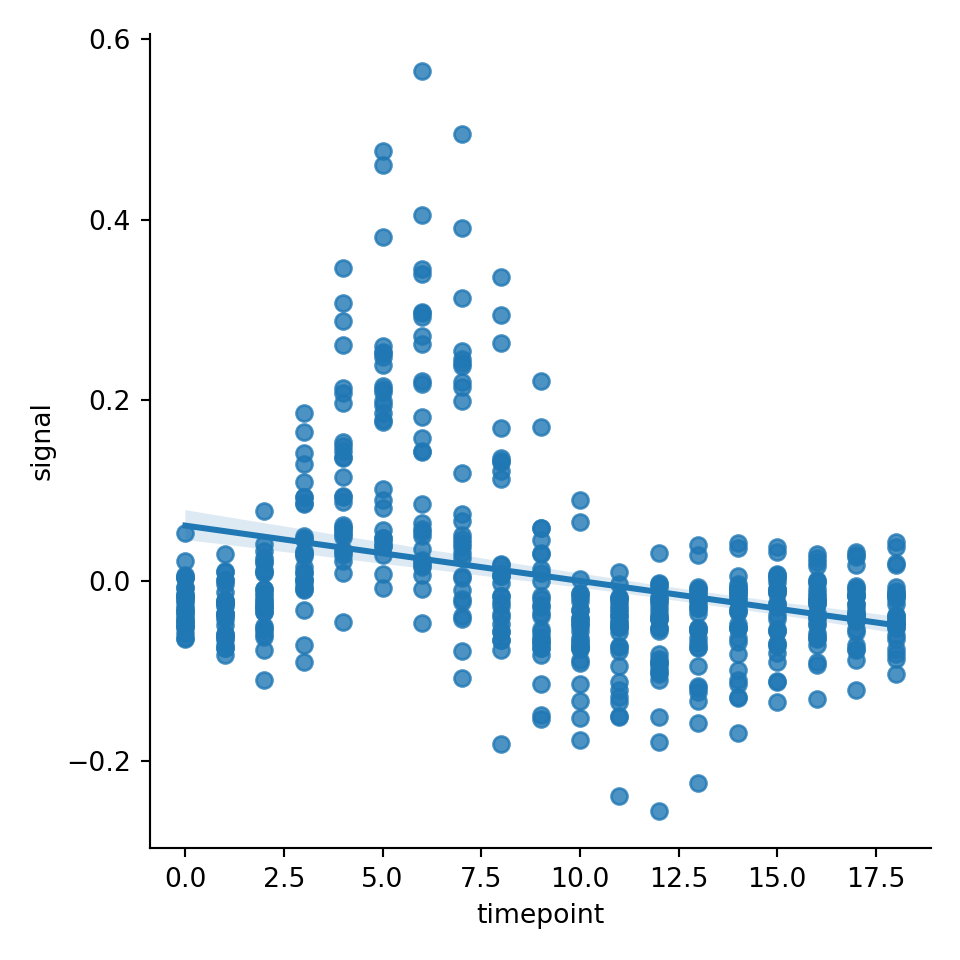
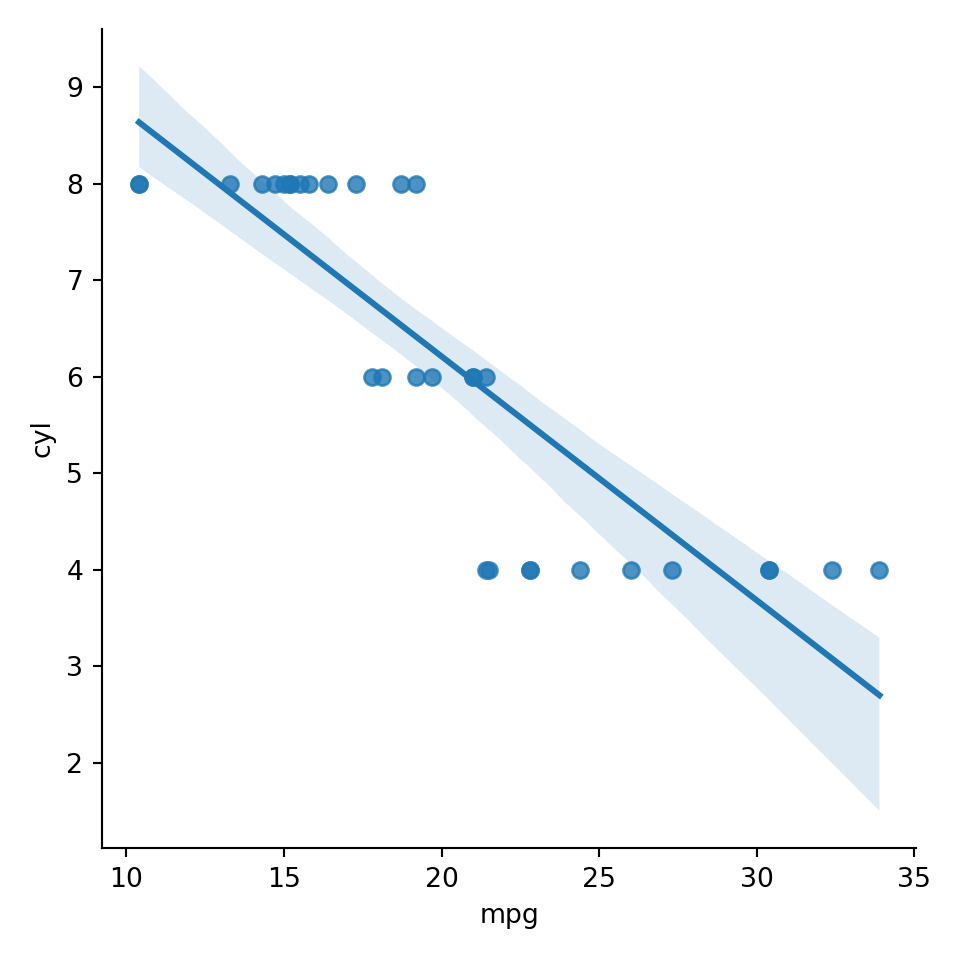
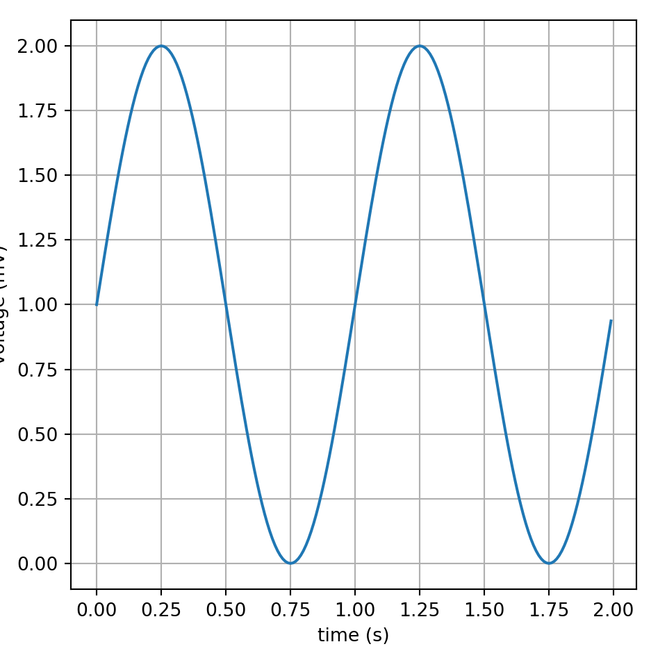
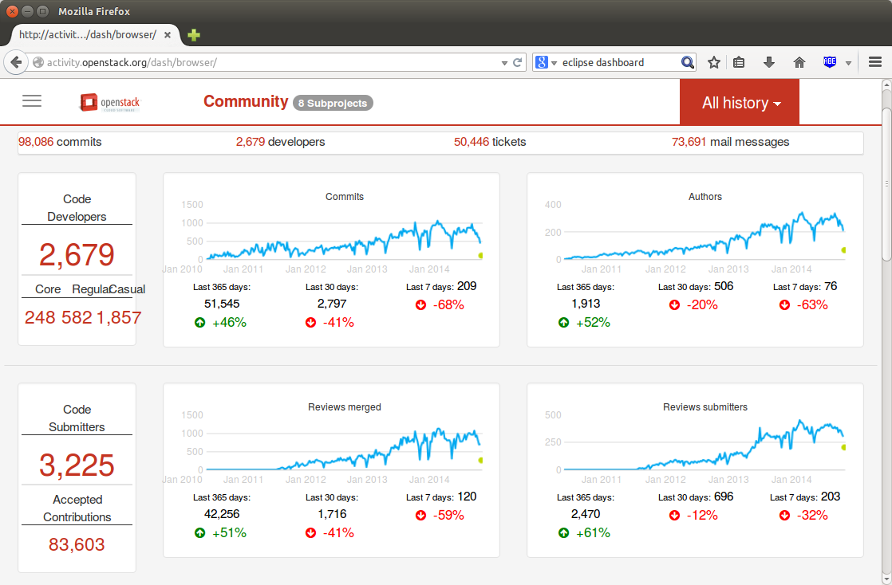
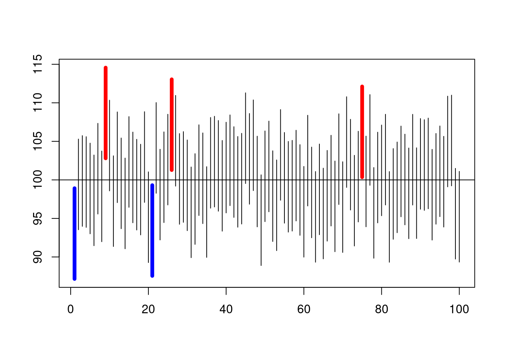
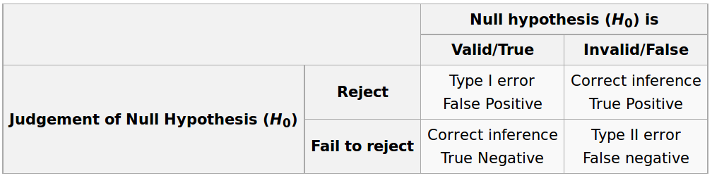
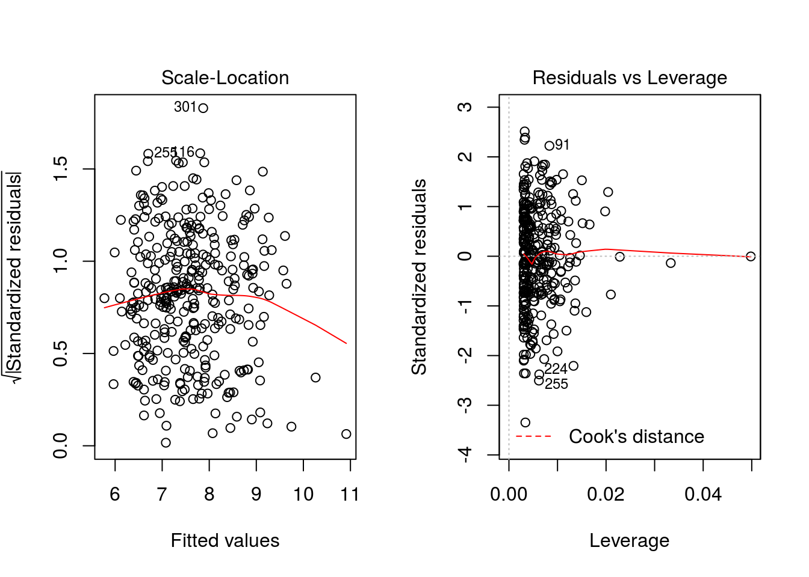
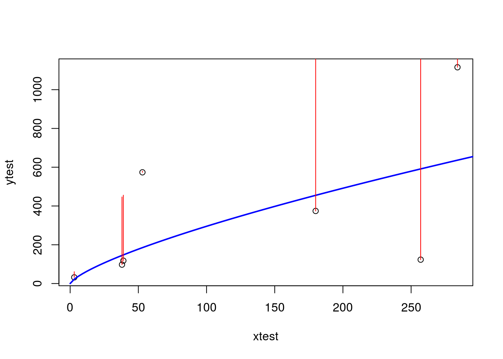
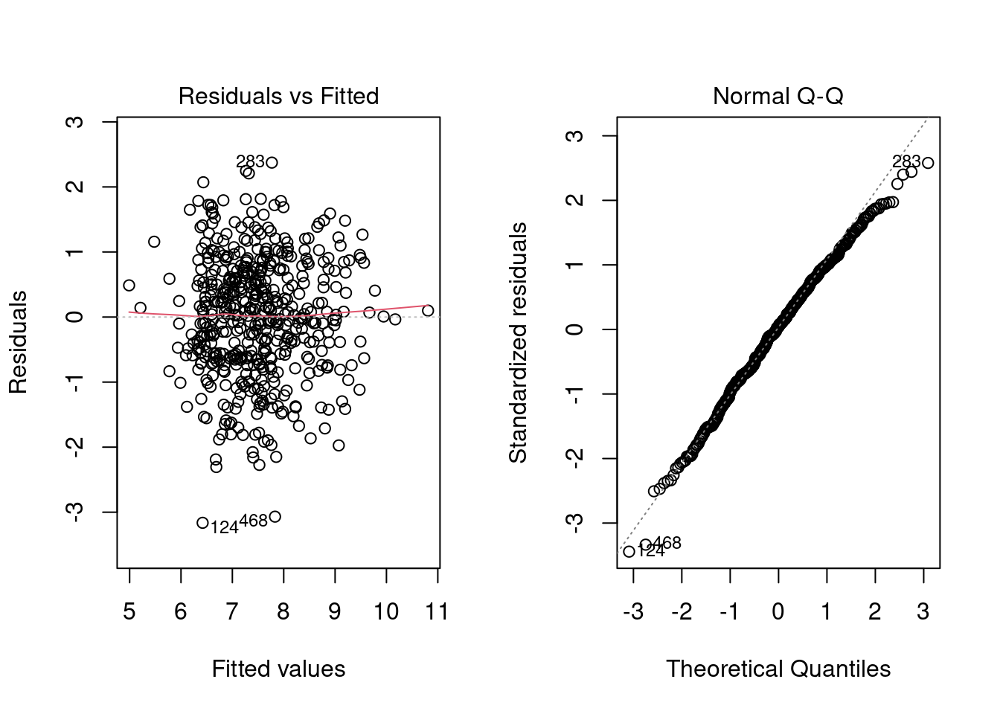
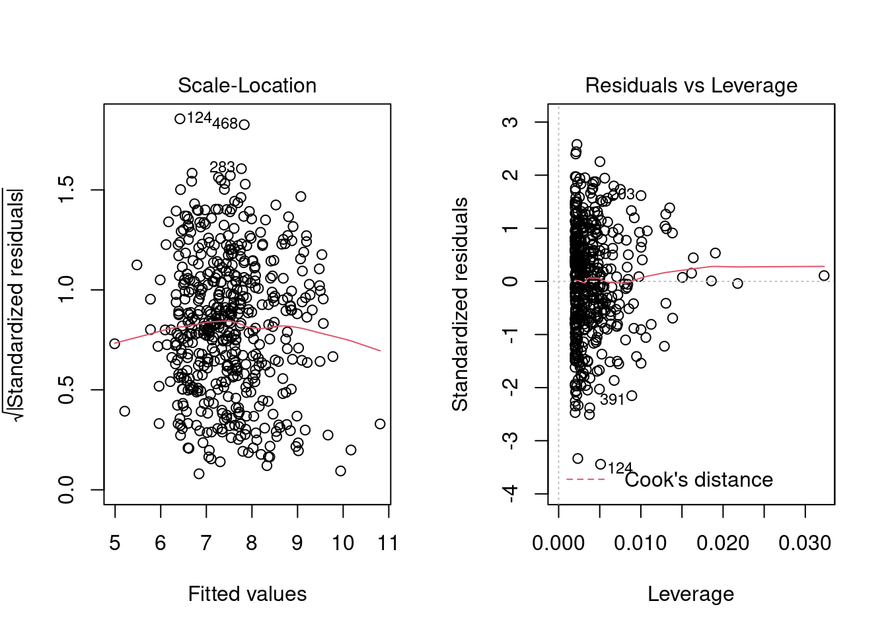

Chapter 2 What is Data Mining / Knowledge Discovery in Databases (KDD)
The non-trivial process of identifying valid, novel, potentially useful, and ultimately understandable patterns in data (Fayyad, Piatetsky-Shapiro, and Smyth 1996)

KDD Process
The Cross Industry Process for Data Mining (CRISP-DM) also provides a common and well-developed framework for delivering data mining projects identifying six steps (Shearer 2000):
- Problem Understanding
- Data Understanding
- Data Preparation
- Modeling
- Evaluation
- Deployment
CRISP-DM (Wikipedia)
2.1 The Aim of Data Analysis and Statistical Learning
- The aim of any data analysis is to understand the data
- and to build models for making predictions and estimating future events based on past data
- and to make statistical inferences from our data.
- We may want to test different hypothesis on the data
- We want to generate conclusions about the population where our sample data comes from
- Most probably we are interested in building a model for quality, time, defects or effort prediction

- We want to find a function \(f()\), that given \(X1, X2, ...\) computes \(Y=f(X1, X2, ..., Xn)\)
2.2 Data Science
Data science (DS) is an inter-disciplinary field that uses scientific methods, processes, algorithms and systems to extract knowledge and insights from many structured and unstructured data. Data science is related to data mining, machine learning and big data.
We may say that the term DS embraces all terms related to data analysis that previously were under different disciplines.
Wikipedia Data Science
2.3 Some References
Generic books about statistics:
2.4 Data Mining and Data Science with R
2.5 Data Mining with Weka
Weka is another popular framework written in Java that can be used and extended with other languages and frameworks. The authors of Weka also have a popular book:
- Ian Witten, Eibe Frank, Mark Hall, Christopher J. Pal, Data Mining: Practical Machine Learning Tools and Techniques (4th Edt), Morgan Kaufmann, 2016, ISBN: 978-0128042915
2.6 R Markdown
Cheatsheet link for the markdown documents https://github.com/adam-p/markdown-here/wiki/Markdown-Cheatsheet
This is an R Markdown document. Markdown is a simple formatting syntax for authoring HTML, PDF, and MS Word documents. For more details on using R Markdown see http://rmarkdown.rstudio.com.
When you click the Knit button a document will be generated that includes both content as well as the output of any embedded R code chunks within the document. You can embed an R code chunk like this:
summary(cars)## speed dist
## Min. : 4.0 Min. : 2.00
## 1st Qu.:12.0 1st Qu.: 26.00
## Median :15.0 Median : 36.00
## Mean :15.4 Mean : 42.98
## 3rd Qu.:19.0 3rd Qu.: 56.00
## Max. :25.0 Max. :120.002.7 Including Plots
You can also embed plots, for example:

Note that the echo = FALSE parameter was added to the code chunk to prevent printing of the R code that generated the plot.
2.8 References
https://github.com/adam-p/markdown-here/wiki/Markdown-Cheatsheet https://rmarkdown.rstudio.com/lesson-15.html
| output: html_document pdf_document: default |
|---|
| ## R and Python |
| R and Python can interact together via the reticulate package. |
The documentation for the reticulate package can be found here:
https://rstudio.github.io/reticulate/ |
 |
| Instructions for configuring the system can be found at RStudio site: https://support.rstudio.com/hc/en-us/articles/360023654474-Installing-and-Configuring-Python-with-RStudio. |
| Or we can create our environment following - [R and Python – a happy union with reticulate webinar]https://www.youtube.com/watch?v=8WE-EU5k97Q&t=27s |
r install.packages("reticulate") |
Note that the reticulate package needs Python >= 2.7 and for NumPy requires NumPy >= 1.6. |
| ## Using Python with RMarkdown and RStudio |
| The R build-in dataset will be used later |
r library("reticulate") # use_virtualenv("myenv") data("mtcars") |
python print("Hello Python!") |
## Hello Python! |
| ```python datactrs = { ‘CHN’: {‘COUNTRY’: ‘China,’ ‘POP’: 1_398.72, ‘AREA’: 9_596.96, ‘GDP’: 12_234.78, ‘CONT’: ‘Asia’}, ‘IND’: {‘COUNTRY’: ‘India,’ ‘POP’: 1_351.16, ‘AREA’: 3_287.26, ‘GDP’: 2_575.67, ‘CONT’: ‘Asia,’ ‘IND_DAY’: ‘1947-08-15’}, ‘USA’: {‘COUNTRY’: ‘US,’ ‘POP’: 329.74, ‘AREA’: 9_833.52, ‘GDP’: 19_485.39, ‘CONT’: ‘N.America,’ ‘IND_DAY’: ‘1776-07-04’}, ‘IDN’: {‘COUNTRY’: ‘Indonesia,’ ‘POP’: 268.07, ‘AREA’: 1_910.93, ‘GDP’: 1_015.54, ‘CONT’: ‘Asia,’ ‘IND_DAY’: ‘1945-08-17’}, ‘BRA’: {‘COUNTRY’: ‘Brazil,’ ‘POP’: 210.32, ‘AREA’: 8_515.77, ‘GDP’: 2_055.51, ‘CONT’: ‘S.America,’ ‘IND_DAY’: ‘1822-09-07’}, ‘PAK’: {‘COUNTRY’: ‘Pakistan,’ ‘POP’: 205.71, ‘AREA’: 881.91, ‘GDP’: 302.14, ‘CONT’: ‘Asia,’ ‘IND_DAY’: ‘1947-08-14’}, ‘NGA’: {‘COUNTRY’: ‘Nigeria,’ ‘POP’: 200.96, ‘AREA’: 923.77, ‘GDP’: 375.77, ‘CONT’: ‘Africa,’ ‘IND_DAY’: ‘1960-10-01’}, ‘BGD’: {‘COUNTRY’: ‘Bangladesh,’ ‘POP’: 167.09, ‘AREA’: 147.57, ‘GDP’: 245.63, ‘CONT’: ‘Asia,’ ‘IND_DAY’: ‘1971-03-26’}, ‘RUS’: {‘COUNTRY’: ‘Russia,’ ‘POP’: 146.79, ‘AREA’: 17_098.25, ‘GDP’: 1_530.75, ‘IND_DAY’: ‘1992-06-12’}, ‘MEX’: {‘COUNTRY’: ‘Mexico,’ ‘POP’: 126.58, ‘AREA’: 1_964.38, ‘GDP’: 1_158.23, ‘CONT’: ‘N.America,’ ‘IND_DAY’: ‘1810-09-16’}, ‘JPN’: {‘COUNTRY’: ‘Japan,’ ‘POP’: 126.22, ‘AREA’: 377.97, ‘GDP’: 4_872.42, ‘CONT’: ‘Asia’}, ‘DEU’: {‘COUNTRY’: ‘Germany,’ ‘POP’: 83.02, ‘AREA’: 357.11, ‘GDP’: 3_693.20, ‘CONT’: ‘Europe’}, ‘FRA’: {‘COUNTRY’: ‘France,’ ‘POP’: 67.02, ‘AREA’: 640.68, ‘GDP’: 2_582.49, ‘CONT’: ‘Europe,’ ‘IND_DAY’: ‘1789-07-14’}, ‘GBR’: {‘COUNTRY’: ‘UK,’ ‘POP’: 66.44, ‘AREA’: 242.50, ‘GDP’: 2_631.23, ‘CONT’: ‘Europe’}, ‘ITA’: {‘COUNTRY’: ‘Italy,’ ‘POP’: 60.36, ‘AREA’: 301.34, ‘GDP’: 1_943.84, ‘CONT’: ‘Europe’}, ‘ARG’: {‘COUNTRY’: ‘Argentina,’ ‘POP’: 44.94, ‘AREA’: 2_780.40, ‘GDP’: 637.49, ‘CONT’: ‘S.America,’ ‘IND_DAY’: ‘1816-07-09’}, ‘DZA’: {‘COUNTRY’: ‘Algeria,’ ‘POP’: 43.38, ‘AREA’: 2_381.74, ‘GDP’: 167.56, ‘CONT’: ‘Africa,’ ‘IND_DAY’: ‘1962-07-05’}, ‘CAN’: {‘COUNTRY’: ‘Canada,’ ‘POP’: 37.59, ‘AREA’: 9_984.67, ‘GDP’: 1_647.12, ‘CONT’: ‘N.America,’ ‘IND_DAY’: ‘1867-07-01’}, ‘AUS’: {‘COUNTRY’: ‘Australia,’ ‘POP’: 25.47, ‘AREA’: 7_692.02, ‘GDP’: 1_408.68, ‘CONT’: ‘Oceania’}, ‘KAZ’: {‘COUNTRY’: ‘Kazakhstan,’ ‘POP’: 18.53, ‘AREA’: 2_724.90, ‘GDP’: 159.41, ‘CONT’: ‘Asia,’ ‘IND_DAY’: ‘1991-12-16’} } |
| columns = (‘COUNTRY,’ ‘POP,’ ‘AREA,’ ‘GDP,’ ‘CONT,’ ‘IND_DAY’) ``` |
| ```python import pandas as pd import seaborn as sns #ubuntu #sudo apt-get install -y python3-seaborn import matplotlib.pyplot as plt |
| tips = sns.load_dataset(“tips”) mylist = [“youtube,” ‘linkedin,’ ‘1littlecoder’] sns.scatterplot(x=tips[‘total_bill’], y = tips[‘tip’], hue=tips[‘day’]) plt.show() ``` |
 |
python fmri = sns.load_dataset("fmri") |
r f1 <- subset(py$fmri, region == "parietal") |
python import matplotlib as mpl sns.lmplot("timepoint","signal", data=r.f1) |
python mpl.pyplot.show() |
|  |
python sns.lmplot("mpg", "cyl", data=r.mtcars) |
 |
python mpl.pyplot.show() |
|  |
python import pandas as pd df = pd.DataFrame(data=datactrs, index=columns).T df |
## COUNTRY POP AREA GDP CONT IND_DAY ## CHN China 1398.72 9596.96 12234.78 Asia NaN ## IND India 1351.16 3287.26 2575.67 Asia 1947-08-15 ## USA US 329.74 9833.52 19485.39 N.America 1776-07-04 ## IDN Indonesia 268.07 1910.93 1015.54 Asia 1945-08-17 ## BRA Brazil 210.32 8515.77 2055.51 S.America 1822-09-07 ## PAK Pakistan 205.71 881.91 302.14 Asia 1947-08-14 ## NGA Nigeria 200.96 923.77 375.77 Africa 1960-10-01 ## BGD Bangladesh 167.09 147.57 245.63 Asia 1971-03-26 ## RUS Russia 146.79 17098.25 1530.75 NaN 1992-06-12 ## MEX Mexico 126.58 1964.38 1158.23 N.America 1810-09-16 ## JPN Japan 126.22 377.97 4872.42 Asia NaN ## DEU Germany 83.02 357.11 3693.2 Europe NaN ## FRA France 67.02 640.68 2582.49 Europe 1789-07-14 ## GBR UK 66.44 242.5 2631.23 Europe NaN ## ITA Italy 60.36 301.34 1943.84 Europe NaN ## ARG Argentina 44.94 2780.4 637.49 S.America 1816-07-09 ## DZA Algeria 43.38 2381.74 167.56 Africa 1962-07-05 ## CAN Canada 37.59 9984.67 1647.12 N.America 1867-07-01 ## AUS Australia 25.47 7692.02 1408.68 Oceania NaN ## KAZ Kazakhstan 18.53 2724.9 159.41 Asia 1991-12-16 |
python df.to_csv('datasets/data_countries.csv')
We can read the dataset from python |
python df1 = pd.read_csv("datasets/other/data_countries.csv", index_col=0) |
| Use R to read and write data from a package |
r library("nycflights13") write.csv(flights, "datasets/other/flights.csv") |
| Use python to read the dataset and process the data |
python import pandas flights = pandas.read_csv("datasets/other/flights.csv") flights = flights[flights['dest'] =="ORD"] flights = flights[['carrier', 'dep_delay', 'arr_delay']] flights = flights.dropna() print(flights.head()) |
## carrier dep_delay arr_delay ## 5 UA -4.0 12.0 ## 9 AA -2.0 8.0 ## 25 MQ 8.0 32.0 ## 38 AA -1.0 14.0 ## 57 AA -4.0 4.0
Use Python for plotting |
python import matplotlib.pyplot as plt import numpy as np t = np.arange(0.0, 2.0, 0.01) s = 1 + np.sin(2*np.pi*t) plt.plot(t,s) plt.xlabel('time (s)') plt.ylabel('voltage (mV)') plt.grid(True) plt.savefig("test.png") plt.show() |
|  |
Use R for plotting Python objects:
 |
Note that the echo = FALSE parameter was added to the code chunk to prevent printing of the R code that generated the plot. |
| ## References |
| - https://rstudio.com/resources/webinars/rstudio-a-single-home-for-r-and-python/ |
| - R interface to Python |
| - 3 Wild-Caught R and Python Applications |
| - RStudio + Python, Visual Markdown Editor – RStudio Latest Update |
| - [Arrays in R and in Python]https://rstudio.github.io/reticulate/articles/arrays.html |
| - https://www.r-bloggers.com/2021/02/pythons-pandas-vs-rs-dplyr-which-is-the-best-data-analysis-library/?utm_source=feedburner&utm_medium=email&utm_campaign=Feed%3A+RBloggers+%28R+bloggers%29 |
| # (PART) Data Sources and Metrics and Standards in Software Engineering Defect Prediction {-} |
| # Data Sources in Software Engineering |
| We classify this trail in the following categories: |
| * Source code can be studied to measure its properties, such as size or complexity. |
| * Source Code Management Systems (SCM) make it possible to store all the changes that the different source code files undergo during the project. Also, SCM systems allow for work to be done in parallel by different developers over the same source code tree. Every change recorded in the system is accompanied with meta-information (author, date, reason for the change, etc) that can be used for research purposes. |
| * Issue or Bug tracking systems (ITS). Bugs, defects and user requests are managed in ISTs, where users and developers can fill tickets with a description of a defect found, or a desired new functionality. All the changes to the ticket are recorded in the system, and most of the systems also record the comments and communications among all the users and developers implied in the task. |
| * Messages between developers and users. In the case of free/open source software, the projects are open to the world, and the messages are archived in the form of mailing lists and social networks which can also be mined for research purposes. There are also some other open message systems, such as IRC or forums. |
| * Meta-data about the projects. As well as the low level information of the software processes, we can also find meta-data about the software projects which can be useful for research. This meta-data may include intended-audience, programming language, domain of application, license (in the case of open source), etc. |
 |
| * Usage data. There are statistics about software downloads, logs from servers, software reviews, etc. |
| Types of information stored in the repositories: |
| * Meta-information about the project itself and the people that participated. |
| + Low-level information |
| * Mailing Lists (ML) |
| * Bug Tracking Systems (BTS) or Project Tracker System (PTS) |
| * Software Configuration Management Systems (SCM) |
| + Processed information. For example project management information about the effort estimation and cost of the project. |
| * Whether the repository is public or not |
| * Single project vs. multiprojects. Whether the repository contains information of a single project with multiples versions or multiples projects and/or versions. |
| * Type of content, open source or industrial projects |
| * Format in which the information is stored and formats or technologies for accessing the information: |
| + Text. It can be just plain text, CSV (Comma Separated Values) files, Attribute-Relation File Format (ARFF) or its variants |
| + Through databases. Downloading dumps of the database. |
| + Remote access such as APIs of Web services or REST |
| # Repositories |
| There is a number of open research repositories in Software Engineering. Among them: |
| + Zenodo. It is becoming a popular site for publishing datasets associated with papers. It provides DOIs for referencing data and code: https://zenodo.org/ |
| + Spinellis maintais a curated repository on Github: https://github.com/dspinellis/awesome-msr |
| + PROMISE (PRedictOr Models In Software Engineering). There is a conference with this name (Promise Conference) |
| Some popular datasets used as benchmarking in may paper can still be found on: http://promise.site.uottawa.ca/SERepository/datasets-page.html The is some well-known issues wit the NASA datasets and the source code is not available. |
| + FLOSSMole (Howison, Conklin, and Crowston 2006) http://flossmole.org/ |
| + FLOSSMetrics (Herraiz et al. 2009): http://flossmetrics.org/ |
| + Qualitas Corpus (QC) (Tempero et al. 2010): http://qualitascorpus.com/ |
| + Sourcerer Project (Linstead et al. 2009): http://sourcerer.ics.uci.edu/ |
| + Ultimate Debian Database (UDD) (Nussbaum and Zacchiroli 2010) http://udd.debian.org/ |
| + SourceForge Research Data Archive (SRDA) (Van Antwerp and Madey 2008) http://zerlot.cse.nd.edu/ |
| + Software-artifact Infrastructure Repository (SIR) [http://sir.unl.edu] |
| + OpenHub: https://www.openhub.net/ |
| Not openly available (and mainly for effort estimation): |
| + The International Software Benchmarking Standards Group (ISBSG) http://www.isbsg.org/ |
| Some papers and publications/theses that have been used in the literature: |
| + Helix Data Set (Vasa 2010): http://www.ict.swin.edu.au/research/projects/helix/ |
| + Bug Prediction Dataset (BPD) D’Ambros, Lanza, and Robbes (2011): http://bug.inf.usi.ch/ |
| + Eclipse Bug Data (EBD) Nagappan et al. (2012): http://www.st.cs.uni-saarland.de/softevo/bug-data/eclipse/ |
| # Open Tools/Dashboards to extract data |
| Process to extract data: |
 |
| Within the open source community, several toolkits allow us to extract data that can be used to explore projects: |
| Metrics Grimoire http://metricsgrimoire.github.io/ |
|  |
| SonarQube http://www.sonarqube.org/ |
 |
| CKJM (OO Metrics tool) http://gromit.iiar.pwr.wroc.pl/p_inf/ckjm/ |
| Collects a large number of object-oriented metrics from code. |
| ## Issues |
| There are problems such as different tools report different values for the same metric (Lincke, Lundberg, and Löwe 2008) |
| It is well-know that the NASA datasets have some problems: |
| + (Gray et al. 2011) The misuse of the NASA metrics data program data sets for automated software defect prediction |
| + (Shepperd et al. 2013) Data Quality: Some Comments on the NASA Software Defect Datasets |
| ## Effort Estimation Data in Software Engineering |
| It is worth highlighting the case of software effort estimation datasets with their peculiarities. First, most effort estimation datasets used in the literature are scattered through research papers with the exception of a few kept in the PROMISE repository. Mair et al (2005) also have analysed available datasets in the field of cost estimation identifying 65 different datasets in 50 papers. |
| Second, their size is very small with the exception of ISBSG repository discussed previously which a small sample is available through PROMISE and the China dataset with 499 instances. |
| Third, some can be quite old in a context and time that is not applicable to current development environments. The authors noted that the oldest datasets (COCOMO, Desharnais, Kemerer and Albrecht and Gaffney) tend to be the most studied ones and a subset of the most relevant ones. Also, from the artificial intelligence or data mining point of view effort estimation has been mainly tackled with different types of regression techniques and more recently with techniques which are also typically considered under the umbrella of data mining techniques. However, as the number of examples per dataset is increasing, other machine learning techniques are also being studied (e.g.: Dejaeger et al (2012) report on a comparison of several machine learning techniques to effort estimation with only 5 out the 9 used datasets publicly available). From the data mining point of view, the small number of instances hinders the application of machine learning techniques. |
| However, software effort and cost estimation still remain one of the main challenges in software engineering and have attracted a great deal of interest by many researchers (2007). For example, there are continuous analyses of whether software development follows economies or diseconomies of scale (see B. A. Kitchenham (2002)). |
| Next Table 2.1 (following Mair et al (2005) ) shows the most open cost/effort datasets available in the literature with their main reference. |
| Table: (#tab:effEstimation) Effort Estimation Dataset from articles |
| | Reference | Instances | Attributes | | ———————————-| ————: |————:| |Abran and Robillard (1996) | 21 | 31| |Albrecht-Gaffney (1983) | 24 | 7 | |Bailey and Basili (1981) | 18 | 9 | |Belady and Lehman (1979) | 33 | | |Boehm (aka COCOMO Dataset) (1981) | 63 | 43 | |China dataset[^1] | 499 | 18 | |Desharnais (1988) | 61 | 10 | |Dolado (1997) | 24 | 7 | |Hastings and Sajeev (2001) | 8 | 14 | |Heiat and Heiat (Heiat and Heiat 1997) | 35 | 4 | |Jeffery and Stathis (1996) | 17 | 7 | |Jorgensen (2004) | 47 | 4 | |Jorgensen et al. (2003) | 20 | 4 | |Kemerer (1987) | 15 | 5 | |Kitchenham (Mermaid 2) (2002) | 30 | 5 | |Kitchenham et al. (CSC) (2002) | 145 | 9 | |Kitchenham and Taylor (ICL) (1985) | 10 | 6 | |Kitchenham and Taylor (BT System X) (1985) | 10 | 3 | |Kitchenham and Taylor (BT Software Houses) (1985) | 12 | 6 | |Li et al.(USP05) (2007)[^2] | 202 | 16 | |Mišić and Tevsić (1998) | 6 | 16 | |Maxwell (Dev Effort) (2002) | 63 | 32 | |Maxwell (Maintenance Eff) (2002) | 67 | 28 | |Miyazaki et al. (1994) | 47 | 9 | |Moser et al. (1999) | 37 | 4 | |Shepperd and Cartwright (Shepperd and Cartwright 2001) | 39 | 3 | |Shepperd and Schofield (Telecom 1) (1997) | 18 | 5 | |Schofield (real-time 1) Shepperd and Schofield (1997) | 21 | 4 | |Schofield (Mermaid) (1998) | 30 | 18 | |Schofield (Finnish) (1998) | 39 | 30 | |Schofield (Hughes) (1998) | 33 | 14| |Woodfield et al. (1981) | 63 | 8 | |
| [^1]: Donated through PROMISE. [^2]: Only a subset of the data in the paper, the complete dataset is donated through PROMISE |
| # (PART) Exploratory and Descriptive Data analysis {-} |
| # Exploratory Data Analysis |
| ## Descriptive statistics |
| The first task to do with any dataset is to characterize it in terms of summary statistics and graphics. |
| Displaying information graphically will help us to identify the main characteristics of the data. To describe a distribution we often want to know where it is centered and and what the spread is (mean, median, quantiles) |
| ## Basic Plots |
| * Histogram defines a sequence of breaks and then counts the number of observations in the bins formed by the breaks. |
| * Boxplot used to summarize data succinctly, quickly displaying if the data is symmetric or has suspected outliers. |
 |
| * Q-Q plot is used to determine if the data is close to being normally distributed. The quantiles of the standard normal distribution is represented by a straight line. The normality of the data can be evaluated by observing the extent in which the points appear on the line. When the data is normally distributed around the mean, then the mean and the median should be equal. Quantiles are cut points dividing the range of a probability distribution into continuous intervals with equal probabilities, or dividing the observations in a sample in the same way. |
 |
| * Scatterplot provides a graphical view of the relationship between two sets of numbers: one numerical variable against another. |
| * Kernel Density plot visualizes the underlying distribution of a variable. Kernel density estimation is a non-parametric method of estimating the probability density function of continuous random variable. It helps to identify the distribution of the variable. |
| * Violin plot is a combination of a boxplot and a kernel density plot. |
| ## Normality |
| * A normal distribution is an arrangement of a data set in which most values cluster in the middle of the range * A graphical representation of a normal distribution is sometimes called a bell curve because of its shape. * Many procedures in statistics are based on this property. Parametric procedures require the normality property. * In a normal distribution about 95% of the probability lies within 2 Standard Deviations of the mean. * Two examples: one population with mean 60 and the standard deviation of 1, and the other with mean 60 and \(sd=4\) (means shifted to 0) |
r # Area within 2SD of the mean par(mfrow=c(1,2)) plot(function(x) dnorm(x, mean = 0, sd = 1), xlim = c(-3, 3), main = "SD 1", xlab = "x", ylab = "", cex = 2) segments(-2, 0, -2, 0.4) segments(2, 0, 2, 0.4) # Area within 4SD of the mean plot(function(x) dnorm(x, mean = 0, sd = 4), xlim = c(-12, 12), main = "SD 4", xlab = "x", ylab = "", cex = 2) segments(-8, 0, -8, 0.1) segments(8, 0, 8, 0.1) |
| - if we sample from this population we get “another population”: |
| ```r #tidy uses the package formatR to format the code |
| sample.means <- rep(NA, 1000) for (i in 1:1000) { sample.40 <- rnorm(40, mean = 60, sd = 4) #rnorm generates random numbers from normal distribution sample.means[i] <- mean(sample.40) } means40 <- mean(sample.means) sd40 <- sd(sample.means) means40 ``` |
## [1] 59.99136 |
r sd40 |
## [1] 0.6292996 |
| - These sample means are another “population.” The sampling distribution of the sample mean is normally distributed meaning that the “mean of a representative sample provides an estimate of the unknown population mean.” This is shown in Figure ?? |
r hist(sample.means) |
| ## Using a running Example to visualise the different plots |
| As a running example we do next: |
| 1. Set the path to to the file |
2. Read the Telecom1 dataset and print out the summary statistics with the command summary |
r options(digits=3) telecom1 <- read.table("./datasets/effortEstimation/Telecom1.csv", sep=",",header=TRUE, stringsAsFactors=FALSE, dec = ".") #read data summary(telecom1) |
## size effort EstTotal ## Min. : 3.0 Min. : 24 Min. : 30 ## 1st Qu.: 37.2 1st Qu.: 119 1st Qu.:142 ## Median : 68.5 Median : 222 Median :289 ## Mean :100.3 Mean : 284 Mean :320 ## 3rd Qu.:164.0 3rd Qu.: 352 3rd Qu.:472 ## Max. :284.0 Max. :1116 Max. :777 |
| * We see that this dataset has three variables (or parameters) and few data points (18) + size: the independent variable + effort: the dependent variable + EstTotal: the estimates coming from an estimation method * Basic Plots |
| ```r par(mfrow=c(1,2)) #n figures per row size_telecom1 <- telecom1\(size effort_telecom1 <- telecom1\)effort |
| hist(size_telecom1, col=“blue,” xlab=‘size,’ ylab = ‘Probability,’ main = ‘Histogram of project Size’) lines(density(size_telecom1, na.rm = T, from = 0, to = max(size_telecom1))) plot(density(size_telecom1)) ``` |
 |
r hist(effort_telecom1, col="blue") plot(density(effort_telecom1)) |
 |
r boxplot(size_telecom1) boxplot(effort_telecom1) |
 |
r # violin plots for those two variables library(vioplot) vioplot(size_telecom1, names = '') title("Violin Plot of Project Size") vioplot(effort_telecom1, names = '') title("Violin Plot of Project Effort") |
 |
r par(mfrow=c(1,1)) qqnorm(size_telecom1, main="Q-Q Plot of 'size'") qqline(size_telecom1, col=2, lwd=2, lty=2) #draws a line through the first and third quartiles |
 |
r qqnorm(effort_telecom1, main="Q-Q Plot of 'effort'") qqline(effort_telecom1) |
 |
| * We can observe the non-normality of the data. |
| * We may look the possible relationship between size and effort with a scatter plot |
r plot(size_telecom1, effort_telecom1) |
| ### Example with the China dataset |
r library(foreign) china <- read.arff("./datasets/effortEstimation/china.arff") china_size <- china$AFP summary(china_size) |
## Min. 1st Qu. Median Mean 3rd Qu. Max. ## 9 100 215 487 438 17518 |
r china_effort <- china$Effort summary(china_effort) |
## Min. 1st Qu. Median Mean 3rd Qu. Max. ## 26 704 1829 3921 3826 54620 |
r par(mfrow=c(1,2)) hist(china_size, col="blue", xlab="Adjusted Function Points", main="Distribution of AFP") hist(china_effort, col="blue",xlab="Effort", main="Distribution of Effort") |
 |
r boxplot(china_size) boxplot(china_effort) |
 |
r qqnorm(china_size) qqline(china_size) qqnorm(china_effort) qqline(china_effort) |
 * We observe the non-normality of the data.
* We observe the non-normality of the data. |
| #### Normality. Galton data |
| It is the data based on the famous 1885 Francis Galton’s study about the relationship between the heights of adult children and the heights of their parents. |
 |
| #### Normalization |
| Take \(log\)s in both independent variables. For example, with the China dataset. |
  |
| * If the \(log\) transformation is used, then the estimation equation is: \[y= e^{b_0 + b_1 log(x)} \] |
| ## Correlation |
| Correlation is a statistical relationship between two sets of data. With the whole dataset we may check for the linear Correlation of the variables we are interested in. |
| As an example with the China dataset |
r par(mfrow=c(1,1)) plot(china_size,china_effort) |
 |
r cor(china_size,china_effort) |
## [1] 0.685 |
r cor.test(china_size,china_effort) |
## ## Pearson's product-moment correlation ## ## data: china_size and china_effort ## t = 21, df = 497, p-value <2e-16 ## alternative hypothesis: true correlation is not equal to 0 ## 95 percent confidence interval: ## 0.635 0.729 ## sample estimates: ## cor ## 0.685 |
r cor(china_size,china_effort, method="spearman") |
## [1] 0.649 |
r cor(china_size,china_effort, method="kendall") |
## [1] 0.468 |
| ## Confidence Intervals. Bootstrap * Until now we have generated point estimates * A confidence interval (CI) is an interval estimate of a population parameter. The parameter can be the mean, the median or other. The frequentist CI is an observed interval that is different from sample to sample. It frequently includes the value of the unobservable parameter of interest if the experiment is repeated. The confidence level is the value that measures the frequency that the constructed intervals contain the true value of the parameter. * The construction of a confidence interval with an exact value of confidence level for a distribution requires some statistical properties. Usually, normality is one of the properties required for computing confidence intervals. + Not all confidence intervals contain the true value of the parameter. + Simulation of confidence intervals |
| An example from Ugarte et al. (Ugarte, Militino, and Arnholt 2015) |
r set.seed(10) norsim(sims = 100, n = 36, mu = 100, sigma = 18, conf.level = 0.95) |
|  |
| * The range defined by the confidence interval will vary with each sample, because the sample size will vary each time and the standard deviation will vary too. * 95% confidence interval: it is the probability that the hypothetical confidence intervals (that would be computed from the hypothetical repeated samples) will contain the population mean. * the particular interval that we compute on one sample does not mean that the population mean lies within that interval with a probability of 95%. * Recommended reading: (Hoekstra et al. 2014) Robust misinterpretation of confidence intervals |
| ## Nonparametric Bootstrap * For computing CIs the important thing is to know the assumptions that are made to “know” the distribution of the statistic. * There is a way to compute confidence intervals without meeting the requirements of parametric methods. * Resampling or bootstraping is a method to calculate estimates of a parameter taking samples from the original data and using those resamples to calculate statistics. Using the resamples usually gives more accurate results than using the original single sample to calculate an estimate of a parameter. |
 - An example of bootstrap CI can be found in Chapter 3, “Evaluation in Software Engineering”
- An example of bootstrap CI can be found in Chapter 3, “Evaluation in Software Engineering” |
| # Classical Hypothesis Testing |
| - By “classical” we mean the standard “frequentist” approach to hypothesis testing. The “frequentist” approach to probability sees it as the frequency of events in the long run. We repeat experiments over and over and we count the times that our object of interest appears in the sequence. |
| - The classical approach is usually called null hypothesis significance testing (NHST) because the process starts by setting a null hypothesis \(H_0\) which is the opposite about what we think is true. |
| - The rationale of the process is that the statistical hypothesis should be falsifiable, that is, we can find evidence that the hypothesis is not true. We try to find evidence against the null hypothesis in order to support our alternative hypothesis \(H_A\) |
| - Usually, the null hypothesis is described as the situation of “no effect” and the alternative hypothesis describes the effect that we are looking for. |
| - After collecting data, taking an actual sample, we measure the distance of our parameter of interest from the hypothesized population parameter, and use the facts of the sampling distribution to determine the probability of obtaining such a sample assuming the hypothesis is true. This is amounts to a test of the hypothesis. |
| - If the probability of our sample, given the null hypothesis is high, this provides evidence that the null hypothesis is true. Conversely, if the probability of the sample is low (given the hypothesis), this is evidence against the null hypothesis. The hypothesis being tested in this way is named the null hypothesis. |
| - The goal of the test is to determine if the null hypothesis can be rejected. A statistical test can either reject or fail to reject a null hypothesis, but never prove it true. |
| - We can make two types of errors: false positive (Type I) and false negative (Type II) |
| - Type I and Type II errors |
|  |
| - Two-tailed NHST |
 |
| - One-tailed NHST |
 |
| - elementary example |
r data = c(52.7, 53.9, 41.7, 71.5, 47.6, 55.1, 62.2, 56.5, 33.4, 61.8, 54.3, 50.0, 45.3, 63.4, 53.9, 65.5, 66.6, 70.0, 52.4, 38.6, 46.1, 44.4, 60.7, 56.4); t.test(data, mu=50, alternative = 'greater') |
## ## One Sample t-test ## ## data: data ## t = 2, df = 23, p-value = 0.02 ## alternative hypothesis: true mean is greater than 50 ## 95 percent confidence interval: ## 50.9 Inf ## sample estimates: ## mean of x ## 54.3 |
| - Keeping this simple, we could start hypothesis testing about one sample median with the wilcoxon test for non-normal distributions. |
| - “ae” is the absolute error in the China Test data |
r median(ae) |
## [1] 867 |
r mean(ae) |
## [1] 1867 |
r wilcox.test(ae, mu=800, alternative = 'greater') #change the values of mu and see the results |
## ## Wilcoxon signed rank test with continuity correction ## ## data: ae ## V = 8990, p-value = 8e-04 ## alternative hypothesis: true location is greater than 800 |
| - Quick introduction at https://psychstatsworkshop.wordpress.com/2014/08/06/lesson-9-hypothesis-testing/ |
| ## p-values - p-value: the p-value of a statistical test is the probability, computed assuming that \(H_0\) is true, that the test statistic would take a value as extreme or more extreme than that actually observed. - http://www.nature.com/news/psychology-journal-bans-p-values-1.17001 - https://www.sciencenews.org/blog/context/p-value-ban-small-step-journal-giant-leap-science |
 |
| # (PART) Preprocessing {-} |
| # Preprocessing |
| Following the data mining process, we describe what is meant by preprocessing, classical supervised models, unsupervised models and evaluation in the context of software engineering with examples |
| This task is probably the hardest and where most of effort is spend in the data mining process. It is quite typical to transform the data, for example, finding inconsistencies, normalising, imputing missing values, transforming input data, merging variables, etc. |
| Typically, pre-processing consist of the following tasks (subprocesses): |
| + Data cleaning (consistency, noise detection, outliers) + Data integration + Data transformation (normalisation, discretisation) and derivation of new attributes from existing ones (e.g., population density from population and area) + Missing data imputation + Data reduction (feature selection and instace selection) |
| ## Data |
| Consistent data are semantically correct based on real-world knowledge of the problem, i.e., no constrains are violated and data that can be used for inducing models and analysis. For example, the LoC or effort is constrained to non-negative values. We can also consider that to multiple attributes are consistent among them, and even datasets (e.g., same metrics but collected by different tools) |
| ## Missing values |
| Missing values will have a negative effect when analysing the data or learning models. The results can be biased when compared with the models induced from the complete data, the results can be harder to analyse, it may be needed to discard records with missing values depending on the algorithm and this can be an important problems with small datasets such as the effort estimation ones. |
| Missing data is typically classified into: * MCAR (Missing Completely at Random) or MAR (Missing At Random) where there is no reason for those missing values and we can assume that the distribution could follow the attribute’s distribution. * MNAR (Missing Not At Random) where there is a pattern for those missing values and it may may be advisable to check the data gathering process to try to understand why such information is missing. |
| Imputation consists in replacing missing values for estimates of those missing values. Many algorithms do cannot handle missing values and therefore, imputation methods are needed. We can use simple approaches such as the replacing the missing values with the mean or mode of the attribute. More elaborated approaches include: |
| * EM (Expectation-Maximisation) * Distance-based + \(k\)-NN (\(k\)-Nearest Neighbours) + Clustering |
In R, a missing value is represented with NA and the analyst must decide what to do with missing data. The simplest approach is to leave out instances (ignore missing -IM-) with with missing data. This functionality is supported by many base functions through the na.rm option. |
The mice R package. MICE (Multivariate Imputation via Chained Equations) assumes that data are missing at random. Other packages include Amelia, missForest, Hmisc and mi. |
| ## Noise |
| Imperfections of the real-world data that influences negatively in the induced machine learning models. Approaches to deal with noisy data include: * Robust learners capable of handling noisy data (e.g., C4.5 through pruning strategies) * Data polishing methods which aim to correct noisy instances prior training * Noise filters which are used to identify and eliminate noisy instances from the training data. |
| Types of noise data: * Class Noise (aka label noise). + There can be contradictory cases (all attributes have the same value except the class) + Misclassifications. The class attribute is not labeled with the true label (golden truth) * Attribute Noise. Values of attributes that are noise, missing or unknown. |
| ## Outliers |
| There is a large amount of literature related to outlier detection, and furthermore several definitions of outlier exist. |
| ```r library(DMwR2) library(foreign) |
| kc1 <- read.arff(“./datasets/defectPred/D1/KC1.arff”) ``` |
The LOF algorithm (lofactor), given a data set it produces a vector of local outlier factors for each case. |
r kc1num <- kc1[,1:21] outlier.scores <- lofactor(kc1num, k=5) plot(density(na.omit(outlier.scores))) |
 |
r outliers <- order(outlier.scores, decreasing=T)[1:5] print(outliers) |
## [1] 1 6 14 31 33 |
| Another simple method of Hiridoglou and Berthelot for positive observations. |
| ## Feature selection |
| Feature Selection (FS) aims at identifying the most relevant attributes from a dataset. It is important in different ways: |
| * A reduced volume of data allows different data mining or searching techniques to be applied. |
| * Irrelevant and redundant attributes can generate less accurate and more complex models. Furthermore, data mining algorithms can be executed faster. |
| * It avoids the collection of data for those irrelevant and redundant attributes in the future. |
| The problem of FS received a thorough treatment in pattern recognition and machine learning. Most of the FS algorithms tackle the task as a search problem, where each state in the search specifies a distinct subset of the possible attributes (Blum and Langley 1997). The search procedure is combined with a criterion to evaluate the merit of each candidate subset of attributes. There are a multiple possible combinations between each procedure search and each attribute measure (Liu and Yu 2005). |
| There are two major approaches in FS from the method’s output point of view: |
| * Feature subset selection (FSS) |
| * Feature ranking in which attributes are ranked as a list of features which are ordered according to evaluation measures (a subset of features is often selected from the top of the ranking list). |
| FFS algorithms designed with different evaluation criteria broadly fall into two categories: |
| * The filter model relies on general characteristics of the data to evaluate and select feature subsets without involving any data mining algorithm. |
| * The wrapper model requires one predetermined mining algorithm and uses its performance as the evaluation criterion. It searches for features better suited to the mining algorithm aiming to improve mining performance, but it also tends to be more computationally expensive than filter model Langley (1994). |
| Feature subset algorithms search through candidate feature subsets guide by a certain evaluation measure (Liu and Motoda 1998) which captures the goodness of each subset. An optimal (or near optimal) subset is selected when the search stops. |
| Some existing evaluation measures that have been shown effective in removing both irrelevant and redundant features include the consistency measure (Dash, Liu, and Motoda 2000), the correlation measure (Hall 1999) and the estimated accuracy of a learning algorithm (Kohavi and John 1997). |
| + Consistency measure attempts to find a minimum number of features that separate classes as consistently as the full set of features can. An inconsistency is defined as to instances having the same feature values but different class labels. |
| + Correlation measure evaluates the goodness of feature subsets based on the hypothesis that good feature subsets contain features highly correlated to the class, yet uncorrelated to each other. |
| + Wrapper-based attribute selection uses the target learning algorithm to estimate the worth of attribute subsets. The feature subset selection algorithm conducts a search for a good subset using the induction algorithm itself as part of the evaluation function. |
| Langley (1994) notes that feature selection algorithms that search through the space of feature subsets must address four main issues: (i) the starting point of the search, (ii) the organization of the search, (iii) the evaluation of features subsets and (iv) the criterion used to terminate the search. Different algorithms address theses issues differently. |
| It is impractical to look at all possible feature subsets, even with a small number of attributes. Feature selection algorithms usually proceed greedily and are be classified into those that add features to an initially empty set (forward selection) and those that remove features from an initially complete set (backwards elimination). Hybrids both add and remove features as the algorithm progresses. Forward selection is much faster than backward elimination and therefore scales better to large data sets. A wide range of search strategies can be used: best-first, branch-and-bound, simulated annealing, genetic algorithms (see Kohavi and John (1997) for a review). |
| ### FSelector package in R |
| The FSelector package in R implements many algorithms available in Weka |
| ```r library(FSelector) library(foreign) |
| cm1 <- read.arff(“./datasets/defectPred/D1/CM1.arff”) |
| cm1RFWeigths <- random.forest.importance(Defective ~ ., cm1) cutoff.biggest.diff(cm1RFWeigths) ``` |
## [1] "LOC_COMMENTS" "NUM_UNIQUE_OPERATORS" |
| Using the Information Gain measure as ranking: |
r cm1GRWeights <- gain.ratio(Defective ~ ., cm1) cm1GRWeights |
## attr_importance ## LOC_BLANK 0.0000 ## BRANCH_COUNT 0.0000 ## CALL_PAIRS 0.0000 ## LOC_CODE_AND_COMMENT 0.0000 ## LOC_COMMENTS 0.0754 ## CONDITION_COUNT 0.0000 ## CYCLOMATIC_COMPLEXITY 0.0000 ## CYCLOMATIC_DENSITY 0.0000 ## DECISION_COUNT 0.0000 ## DECISION_DENSITY 0.0000 ## DESIGN_COMPLEXITY 0.0000 ## DESIGN_DENSITY 0.0000 ## EDGE_COUNT 0.0000 ## ESSENTIAL_COMPLEXITY 0.0000 ## ESSENTIAL_DENSITY 0.0000 ## LOC_EXECUTABLE 0.0888 ## PARAMETER_COUNT 0.0000 ## HALSTEAD_CONTENT 0.0701 ## HALSTEAD_DIFFICULTY 0.0000 ## HALSTEAD_EFFORT 0.0375 ## HALSTEAD_ERROR_EST 0.0448 ## HALSTEAD_LENGTH 0.0425 ## HALSTEAD_LEVEL 0.0000 ## HALSTEAD_PROG_TIME 0.0375 ## HALSTEAD_VOLUME 0.0471 ## MAINTENANCE_SEVERITY 0.0000 ## MODIFIED_CONDITION_COUNT 0.0000 ## MULTIPLE_CONDITION_COUNT 0.0000 ## NODE_COUNT 0.0000 ## NORMALIZED_CYLOMATIC_COMPLEXITY 0.0000 ## NUM_OPERANDS 0.0000 ## NUM_OPERATORS 0.0471 ## NUM_UNIQUE_OPERANDS 0.0589 ## NUM_UNIQUE_OPERATORS 0.0616 ## NUMBER_OF_LINES 0.0573 ## PERCENT_COMMENTS 0.0663 ## LOC_TOTAL 0.0763 |
r cutoff.biggest.diff(cm1GRWeights) |
## [1] "LOC_EXECUTABLE" "LOC_TOTAL" "LOC_COMMENTS" ## [4] "HALSTEAD_CONTENT" "PERCENT_COMMENTS" "NUM_UNIQUE_OPERATORS" ## [7] "NUM_UNIQUE_OPERANDS" "NUMBER_OF_LINES" "HALSTEAD_VOLUME" ## [10] "NUM_OPERATORS" "HALSTEAD_ERROR_EST" "HALSTEAD_LENGTH" ## [13] "HALSTEAD_EFFORT" "HALSTEAD_PROG_TIME" |
r # After assigning weights, we can select the statistaclly significant ones cm1X2Weights <- chi.squared(Defective ~ ., cm1) cutoff.biggest.diff(cm1X2Weights) |
## [1] "LOC_EXECUTABLE" "LOC_COMMENTS" "LOC_TOTAL" ## [4] "NUM_UNIQUE_OPERATORS" "NUM_UNIQUE_OPERANDS" "NUMBER_OF_LINES" ## [7] "HALSTEAD_VOLUME" "NUM_OPERATORS" "HALSTEAD_ERROR_EST" ## [10] "HALSTEAD_CONTENT" "HALSTEAD_EFFORT" "HALSTEAD_PROG_TIME" ## [13] "HALSTEAD_LENGTH" "PERCENT_COMMENTS" |
| Using CFS attribute selection |
| ```r library(FSelector) library(foreign) |
| cm1 <- read.arff(“./datasets/defectPred/D1/CM1.arff”) |
| result <- cfs(Defective ~ ., cm1) f <- as.simple.formula(result, “Defective”) f ``` |
## Defective ~ LOC_COMMENTS + LOC_EXECUTABLE + HALSTEAD_CONTENT + ## NUM_UNIQUE_OPERATORS + PERCENT_COMMENTS ## <environment: 0x562134b4e640> |
Other packages for Feature selection in R include FSelectorRccp which re-implments the FSlector without WEKA dependencies. |
Another popular package is Boruta, which is based on selection based on Random Forest. |
| ## Instance selection |
| Removal of samples (complementary to the removal of attributes) in order to scale down the dataset prior to learning a model so that there is (almost) no performance loss. |
| There are two types of processes: |
| * Prototype Selection (PS) (Garcia et al. 2012) when the subset is used with a distance based method (kNN) |
| * Training Set Selection (TSS) (Cano, Herrera, and Lozano 2007) in which an actual model is learned. |
| It is also a search problem as with feature selection. Garcia et al. (2012) provide a comprehensive overview of the topic. |
| ## Discretization |
| This process transforms continuous attributes into discrete ones, by associating categorical values to intervals and thus transforming quantitative data into qualitative data. |
| ## Correlation Coefficient and Covariance for Numeric Data |
| Two random variables \(x\) and \(y\) are called independent if the probability distribution of one variable is not affected by the presence of another. |
| \(\tilde{\chi}^2=\frac{1}{d}\sum_{k=1}^{n} \frac{(O_k - E_k)^2}{E_k}\) |
r chisq.test(kc1$LOC_BLANK,kc1$BRANCH_TOTAL) |
## ## Chi-squared test for given probabilities ## ## data: kc1$LOC_BLANK ## X-squared = 17705, df = 2095, p-value <2e-16 |
r chisq.test(kc1$DESIGN_COMPLEXITY,kc1$CYCLOMATIC_COMPLEXITY) |
## ## Pearson's Chi-squared test ## ## data: kc1$DESIGN_COMPLEXITY and kc1$CYCLOMATIC_COMPLEXITY ## X-squared = 25101, df = 696, p-value <2e-16 |
| ## Normalization |
| ### Min-Max Normalization |
| \(z_i=\frac{x_i-\min(x)}{\max(x)-\min(x)}\) |
r library(caret) preObj <- preProcess(kc1[, -22], method=c("center", "scale")) |
| ### Z-score normalization TBD |
| ## Transformations |
| ### Linear Transformations and Quadratic Trans formations TBD |
| ### Box-cox transformation TBD |
| ### Nominal to Binary tranformations TBD |
| ## Preprocessing in R |
### The dplyr package |
| The dplyr package created by Hadley Wickham. Some functions are similar to SQL syntax. key functions in dplyr include: |
| + select: select columns from a dataframe + filter: select rows from a dataframe + summarize: allows us to do summary stats based upon the grouped variable + group_by: group by a factor variable + arrange: order the dataset + joins: as in sql left join |
| Tutorial: https://github.com/justmarkham/dplyr-tutorial |
| Examples |
r library(dplyr) |
| Describe the dataframe: |
r str(kc1) |
## 'data.frame': 2096 obs. of 22 variables: ## $ LOC_BLANK : num 0 0 0 0 2 0 0 0 0 2 ... ## $ BRANCH_COUNT : num 1 1 1 1 1 1 1 1 1 1 ... ## $ LOC_CODE_AND_COMMENT : num 0 0 0 0 0 0 0 0 0 0 ... ## $ LOC_COMMENTS : num 0 0 0 0 0 0 0 0 0 0 ... ## $ CYCLOMATIC_COMPLEXITY: num 1 1 1 1 1 1 1 1 1 1 ... ## $ DESIGN_COMPLEXITY : num 1 1 1 1 1 1 1 1 1 1 ... ## $ ESSENTIAL_COMPLEXITY : num 1 1 1 1 1 1 1 1 1 1 ... ## $ LOC_EXECUTABLE : num 3 1 1 1 8 3 1 1 1 9 ... ## $ HALSTEAD_CONTENT : num 11.6 0 0 0 18 ... ## $ HALSTEAD_DIFFICULTY : num 2.67 0 0 0 3.5 2.67 0 0 0 3.75 ... ## $ HALSTEAD_EFFORT : num 82.3 0 0 0 220.9 ... ## $ HALSTEAD_ERROR_EST : num 0.01 0 0 0 0.02 0.01 0 0 0 0.04 ... ## $ HALSTEAD_LENGTH : num 11 1 1 1 19 11 1 1 1 29 ... ## $ HALSTEAD_LEVEL : num 0.38 0 0 0 0.29 0.38 0 0 0 0.27 ... ## $ HALSTEAD_PROG_TIME : num 4.57 0 0 0 12.27 ... ## $ HALSTEAD_VOLUME : num 30.9 0 0 0 63.1 ... ## $ NUM_OPERANDS : num 4 0 0 0 7 4 0 0 0 10 ... ## $ NUM_OPERATORS : num 7 1 1 1 12 7 1 1 1 19 ... ## $ NUM_UNIQUE_OPERANDS : num 3 0 0 0 5 3 0 0 0 8 ... ## $ NUM_UNIQUE_OPERATORS : num 4 1 1 1 5 4 1 1 1 6 ... ## $ LOC_TOTAL : num 5 3 3 3 12 5 3 3 3 13 ... ## $ Defective : Factor w/ 2 levels "N","Y": 1 1 1 1 1 1 1 1 1 1 ... |
tbl_df creates a “local data frame” as a wrapper for better printing |
r kc1_tbl <- tbl_df(kc1) #deprecated |
## Warning: `tbl_df()` was deprecated in dplyr 1.0.0. ## Please use `tibble::as_tibble()` instead. ## This warning is displayed once every 8 hours. ## Call `lifecycle::last_lifecycle_warnings()` to see where this warning was generated. |
r kc1_tbl <- tibble(kc1) |
| Filter: |
r # Filter rows: use comma or & to represent AND condition filter(kc1_tbl, Defective == "Y" & LOC_BLANK != 0) |
## # A tibble: 251 × 22 ## LOC_BLANK BRANCH_COUNT LOC_CODE_AND_COMMENT LOC_COMMENTS CYCLOMATIC_COMPLEXI… ## <dbl> <dbl> <dbl> <dbl> <dbl> ## 1 6 21 0 10 11 ## 2 5 15 0 2 8 ## 3 2 5 0 0 3 ## 4 4 5 0 2 3 ## 5 2 11 0 2 6 ## 6 2 23 0 3 12 ## 7 1 11 0 2 6 ## 8 1 13 0 2 7 ## 9 2 17 0 2 9 ## 10 3 1 0 0 1 ## # … with 241 more rows, and 17 more variables: DESIGN_COMPLEXITY <dbl>, ## # ESSENTIAL_COMPLEXITY <dbl>, LOC_EXECUTABLE <dbl>, HALSTEAD_CONTENT <dbl>, ## # HALSTEAD_DIFFICULTY <dbl>, HALSTEAD_EFFORT <dbl>, HALSTEAD_ERROR_EST <dbl>, ## # HALSTEAD_LENGTH <dbl>, HALSTEAD_LEVEL <dbl>, HALSTEAD_PROG_TIME <dbl>, ## # HALSTEAD_VOLUME <dbl>, NUM_OPERANDS <dbl>, NUM_OPERATORS <dbl>, ## # NUM_UNIQUE_OPERANDS <dbl>, NUM_UNIQUE_OPERATORS <dbl>, LOC_TOTAL <dbl>, ## # Defective <fct> |
Another operator is %in%. |
| Select: |
r select(kc1_tbl, contains("LOC"), Defective) |
## # A tibble: 2,096 × 6 ## LOC_BLANK LOC_CODE_AND_COMME… LOC_COMMENTS LOC_EXECUTABLE LOC_TOTAL Defective ## <dbl> <dbl> <dbl> <dbl> <dbl> <fct> ## 1 0 0 0 3 5 N ## 2 0 0 0 1 3 N ## 3 0 0 0 1 3 N ## 4 0 0 0 1 3 N ## 5 2 0 0 8 12 N ## 6 0 0 0 3 5 N ## 7 0 0 0 1 3 N ## 8 0 0 0 1 3 N ## 9 0 0 0 1 3 N ## 10 2 0 0 9 13 N ## # … with 2,086 more rows |
Now, kc1_tbl contains(“LOC”), Defective |
| Filter and Select together: |
r # nesting method filter(select(kc1_tbl, contains("LOC"), Defective), Defective !=0) |
## # A tibble: 2,096 × 6 ## LOC_BLANK LOC_CODE_AND_COMME… LOC_COMMENTS LOC_EXECUTABLE LOC_TOTAL Defective ## <dbl> <dbl> <dbl> <dbl> <dbl> <fct> ## 1 0 0 0 3 5 N ## 2 0 0 0 1 3 N ## 3 0 0 0 1 3 N ## 4 0 0 0 1 3 N ## 5 2 0 0 8 12 N ## 6 0 0 0 3 5 N ## 7 0 0 0 1 3 N ## 8 0 0 0 1 3 N ## 9 0 0 0 1 3 N ## 10 2 0 0 9 13 N ## # … with 2,086 more rows |
| It is easier usign the chaining method: |
r # chaining method kc1_tbl %>% select(contains("LOC"), Defective) %>% filter(Defective !=0) |
## # A tibble: 2,096 × 6 ## LOC_BLANK LOC_CODE_AND_COMME… LOC_COMMENTS LOC_EXECUTABLE LOC_TOTAL Defective ## <dbl> <dbl> <dbl> <dbl> <dbl> <fct> ## 1 0 0 0 3 5 N ## 2 0 0 0 1 3 N ## 3 0 0 0 1 3 N ## 4 0 0 0 1 3 N ## 5 2 0 0 8 12 N ## 6 0 0 0 3 5 N ## 7 0 0 0 1 3 N ## 8 0 0 0 1 3 N ## 9 0 0 0 1 3 N ## 10 2 0 0 9 13 N ## # … with 2,086 more rows |
| Arrange ascending |
r # kc1_tbl %>% select(LOC_TOTAL, Defective) %>% arrange(LOC_TOTAL) |
## # A tibble: 2,096 × 2 ## LOC_TOTAL Defective ## <dbl> <fct> ## 1 1 N ## 2 1 N ## 3 1 N ## 4 1 N ## 5 1 N ## 6 1 N ## 7 1 N ## 8 1 N ## 9 1 N ## 10 1 N ## # … with 2,086 more rows |
| Arrange descending: |
r kc1_tbl %>% select(LOC_TOTAL, Defective) %>% arrange(desc(LOC_TOTAL)) |
## # A tibble: 2,096 × 2 ## LOC_TOTAL Defective ## <dbl> <fct> ## 1 288 Y ## 2 286 Y ## 3 283 N ## 4 220 Y ## 5 217 Y ## 6 210 N ## 7 205 Y ## 8 184 Y ## 9 179 Y ## 10 176 Y ## # … with 2,086 more rows |
| Mutate: |
r kc1_tbl %>% filter(Defective == "Y") %>% select(NUM_OPERANDS, NUM_OPERATORS, Defective) %>% mutate(HalsteadLength = NUM_OPERANDS + NUM_OPERATORS) |
## # A tibble: 325 × 4 ## NUM_OPERANDS NUM_OPERATORS Defective HalsteadLength ## <dbl> <dbl> <fct> <dbl> ## 1 64 107 Y 171 ## 2 52 89 Y 141 ## 3 17 41 Y 58 ## 4 41 74 Y 115 ## 5 54 95 Y 149 ## 6 75 156 Y 231 ## 7 54 95 Y 149 ## 8 56 99 Y 155 ## 9 69 124 Y 193 ## 10 44 60 Y 104 ## # … with 315 more rows |
summarise: Reduce variables to values |
r # Create a table grouped by Defective, and then summarise each group by taking the mean of loc kc1_tbl %>% group_by(Defective) %>% summarise(avg_loc = mean(LOC_TOTAL, na.rm=TRUE)) |
## # A tibble: 2 × 2 ## Defective avg_loc ## <fct> <dbl> ## 1 N 15.9 ## 2 Y 44.7 |
r # Create a table grouped by Defective, and then summarise each group by taking the mean of loc kc1_tbl %>% group_by(Defective) %>% summarise_each(funs(mean, min, max), BRANCH_COUNT, LOC_TOTAL) |
## Warning: `summarise_each_()` was deprecated in dplyr 0.7.0. ## Please use `across()` instead. ## This warning is displayed once every 8 hours. ## Call `lifecycle::last_lifecycle_warnings()` to see where this warning was generated. |
## Warning: `funs()` was deprecated in dplyr 0.8.0. ## Please use a list of either functions or lambdas: ## ## # Simple named list: ## list(mean = mean, median = median) ## ## # Auto named with `tibble::lst()`: ## tibble::lst(mean, median) ## ## # Using lambdas ## list(~ mean(., trim = .2), ~ median(., na.rm = TRUE)) ## This warning is displayed once every 8 hours. ## Call `lifecycle::last_lifecycle_warnings()` to see where this warning was generated. |
## # A tibble: 2 × 7 ## Defective BRANCH_COUNT_mean LOC_TOTAL_mean BRANCH_COUNT_min LOC_TOTAL_min ## <fct> <dbl> <dbl> <dbl> <dbl> ## 1 N 3.68 15.9 1 1 ## 2 Y 10.1 44.7 1 2 ## # … with 2 more variables: BRANCH_COUNT_max <dbl>, LOC_TOTAL_max <dbl> |
| It seems than the number of Defective modules is larger than the Non-Defective ones. We can count them with: |
r # n() or tally kc1_tbl %>% group_by(Defective) %>% tally() |
## # A tibble: 2 × 2 ## Defective n ## <fct> <int> ## 1 N 1771 ## 2 Y 325 |
| It seems that it’s an imbalanced dataset… |
r # randomly sample a fixed number of rows, without replacement kc1_tbl %>% sample_n(2) |
## # A tibble: 2 × 22 ## LOC_BLANK BRANCH_COUNT LOC_CODE_AND_COMMENT LOC_COMMENTS CYCLOMATIC_COMPLEXITY ## <dbl> <dbl> <dbl> <dbl> <dbl> ## 1 0 3 0 0 2 ## 2 0 1 0 0 1 ## # … with 17 more variables: DESIGN_COMPLEXITY <dbl>, ## # ESSENTIAL_COMPLEXITY <dbl>, LOC_EXECUTABLE <dbl>, HALSTEAD_CONTENT <dbl>, ## # HALSTEAD_DIFFICULTY <dbl>, HALSTEAD_EFFORT <dbl>, HALSTEAD_ERROR_EST <dbl>, ## # HALSTEAD_LENGTH <dbl>, HALSTEAD_LEVEL <dbl>, HALSTEAD_PROG_TIME <dbl>, ## # HALSTEAD_VOLUME <dbl>, NUM_OPERANDS <dbl>, NUM_OPERATORS <dbl>, ## # NUM_UNIQUE_OPERANDS <dbl>, NUM_UNIQUE_OPERATORS <dbl>, LOC_TOTAL <dbl>, ## # Defective <fct> |
r # randomly sample a fraction of rows, with replacement kc1_tbl %>% sample_frac(0.05, replace=TRUE) |
## # A tibble: 105 × 22 ## LOC_BLANK BRANCH_COUNT LOC_CODE_AND_COMMENT LOC_COMMENTS CYCLOMATIC_COMPLEXI… ## <dbl> <dbl> <dbl> <dbl> <dbl> ## 1 1 3 0 0 2 ## 2 0 1 0 0 1 ## 3 0 1 0 0 1 ## 4 2 5 0 0 3 ## 5 2 7 0 0 4 ## 6 0 1 0 0 1 ## 7 0 1 0 0 1 ## 8 0 1 0 0 1 ## 9 0 1 0 0 1 ## 10 0 1 0 1 1 ## # … with 95 more rows, and 17 more variables: DESIGN_COMPLEXITY <dbl>, ## # ESSENTIAL_COMPLEXITY <dbl>, LOC_EXECUTABLE <dbl>, HALSTEAD_CONTENT <dbl>, ## # HALSTEAD_DIFFICULTY <dbl>, HALSTEAD_EFFORT <dbl>, HALSTEAD_ERROR_EST <dbl>, ## # HALSTEAD_LENGTH <dbl>, HALSTEAD_LEVEL <dbl>, HALSTEAD_PROG_TIME <dbl>, ## # HALSTEAD_VOLUME <dbl>, NUM_OPERANDS <dbl>, NUM_OPERATORS <dbl>, ## # NUM_UNIQUE_OPERANDS <dbl>, NUM_UNIQUE_OPERATORS <dbl>, LOC_TOTAL <dbl>, ## # Defective <fct> |
r # Better formatting adapted to the screen width glimpse(kc1_tbl) |
## Rows: 2,096 ## Columns: 22 ## $ LOC_BLANK <dbl> 0, 0, 0, 0, 2, 0, 0, 0, 0, 2, 2, 0, 2, 1, 2, 2, … ## $ BRANCH_COUNT <dbl> 1, 1, 1, 1, 1, 1, 1, 1, 1, 1, 1, 1, 1, 1, 1, 5, … ## $ LOC_CODE_AND_COMMENT <dbl> 0, 0, 0, 0, 0, 0, 0, 0, 0, 0, 0, 0, 0, 0, 0, 0, … ## $ LOC_COMMENTS <dbl> 0, 0, 0, 0, 0, 0, 0, 0, 0, 0, 0, 0, 0, 0, 0, 0, … ## $ CYCLOMATIC_COMPLEXITY <dbl> 1, 1, 1, 1, 1, 1, 1, 1, 1, 1, 1, 1, 1, 1, 1, 3, … ## $ DESIGN_COMPLEXITY <dbl> 1, 1, 1, 1, 1, 1, 1, 1, 1, 1, 1, 1, 1, 1, 1, 2, … ## $ ESSENTIAL_COMPLEXITY <dbl> 1, 1, 1, 1, 1, 1, 1, 1, 1, 1, 1, 1, 1, 1, 1, 3, … ## $ LOC_EXECUTABLE <dbl> 3, 1, 1, 1, 8, 3, 1, 1, 1, 9, 8, 1, 8, 1, 8, 12,… ## $ HALSTEAD_CONTENT <dbl> 11.6, 0.0, 0.0, 0.0, 18.0, 11.6, 0.0, 0.0, 0.0, … ## $ HALSTEAD_DIFFICULTY <dbl> 2.67, 0.00, 0.00, 0.00, 3.50, 2.67, 0.00, 0.00, … ## $ HALSTEAD_EFFORT <dbl> 82.3, 0.0, 0.0, 0.0, 220.9, 82.3, 0.0, 0.0, 0.0,… ## $ HALSTEAD_ERROR_EST <dbl> 0.01, 0.00, 0.00, 0.00, 0.02, 0.01, 0.00, 0.00, … ## $ HALSTEAD_LENGTH <dbl> 11, 1, 1, 1, 19, 11, 1, 1, 1, 29, 19, 1, 19, 1, … ## $ HALSTEAD_LEVEL <dbl> 0.38, 0.00, 0.00, 0.00, 0.29, 0.38, 0.00, 0.00, … ## $ HALSTEAD_PROG_TIME <dbl> 4.57, 0.00, 0.00, 0.00, 12.27, 4.57, 0.00, 0.00,… ## $ HALSTEAD_VOLUME <dbl> 30.9, 0.0, 0.0, 0.0, 63.1, 30.9, 0.0, 0.0, 0.0, … ## $ NUM_OPERANDS <dbl> 4, 0, 0, 0, 7, 4, 0, 0, 0, 10, 7, 0, 7, 0, 11, 1… ## $ NUM_OPERATORS <dbl> 7, 1, 1, 1, 12, 7, 1, 1, 1, 19, 12, 1, 12, 1, 16… ## $ NUM_UNIQUE_OPERANDS <dbl> 3, 0, 0, 0, 5, 3, 0, 0, 0, 8, 5, 0, 5, 0, 6, 9, … ## $ NUM_UNIQUE_OPERATORS <dbl> 4, 1, 1, 1, 5, 4, 1, 1, 1, 6, 5, 1, 5, 1, 8, 12,… ## $ LOC_TOTAL <dbl> 5, 3, 3, 3, 12, 5, 3, 3, 3, 13, 12, 3, 12, 4, 13… ## $ Defective <fct> N, N, N, N, N, N, N, N, N, N, N, N, N, N, N, N, … |
| ## Other libraries and tricks |
The lubridate package contains a number of functions facilitating the conversion of text to
POSIX dates. As an example, consider the following code. We may use this, for example, with time series. |
| For example https://cran.r-project.org/doc/contrib/de_Jonge+van_der_Loo-Introduction_to_data_cleaning_with_R.pdf |
r library(lubridate) dates <- c("15/02/2013", "15 Feb 13", "It happened on 15 02 '13") dmy(dates) |
## [1] "2013-02-15" "2013-02-15" "2013-02-15" |
| # (PART) Supervised Models {-} |
| # Supervised Classification |
| A classification problem can be defined as the induction, from a dataset \(\cal D\), of a classification function \(\psi\) that, given the attribute vector of an instance/example, returns a class \({c}\). A regression problem, on the other hand, returns an numeric value. |
| Dataset, \(\cal D\), is typically composed of \(n\) attributes and a class attribute \(C\). |
| | \(Att_1\) | … | \(Att_n\) | \(Class\) | |———-|—–| ———|———| | \(a_{11}\) | … | \(a_{1n}\) | \(c_1\) | | \(a_{21}\) | … | \(a_{2n}\) | \(c_2\) | | … | … | … | … | | \(a_{m1}\) | … | \(a_{mn}\) | \(c_m\) | |
| Columns are usually called attributes or features. Typically, there is a class attribute, which can be numeric or discrete. When the class is numeric, it is a regression problem. With discrete values, we can talk about binary classification or multiclass (multinomial classification) when we have more than three values. There are variants such multi-label classification (we will cover these in the advanced models section). |
| Once we learn a model, new instances are classified. As shown in the next figure. |
 |
| We have multiple types of models such as classification trees, rules, neural networks, and probabilistic classifiers that can be used to classify instances. |
| Fernandez et al provide an extensive comparison of 176 classifiers using the UCI dataset (Fernández-Delgado et al. 2014). |
| We will show the use of different classification techniques in the problem of defect prediction as running example. In this example,the different datasets are composed of classical metrics (Halstead or McCabe metrics) based on counts of operators/operands and like or object-oriented metrics (e.g. Chidamber and Kemerer) and the class attribute indicating whether the module or class was defective. |
| ## Classification Trees |
| There are several packages for inducing classification trees, for example with the party package (recursive partitioning): |
| ```r library(foreign) # To load arff file library(party) # Build a decision tree library(caret) |
| jm1 <- read.arff(“./datasets/defectPred/D1/JM1.arff”) str(jm1) ``` |
## 'data.frame': 9593 obs. of 22 variables: ## $ LOC_BLANK : num 447 37 11 106 101 67 105 18 39 143 ... ## $ BRANCH_COUNT : num 826 29 405 240 464 187 344 47 163 67 ... ## $ LOC_CODE_AND_COMMENT : num 12 8 0 7 11 4 9 0 1 7 ... ## $ LOC_COMMENTS : num 157 42 17 344 75 1 40 10 6 49 ... ## $ CYCLOMATIC_COMPLEXITY: num 470 19 404 127 263 94 207 24 94 34 ... ## $ DESIGN_COMPLEXITY : num 385 19 2 105 256 63 171 13 67 25 ... ## $ ESSENTIAL_COMPLEXITY : num 113 6 1 33 140 27 58 1 3 1 ... ## $ LOC_EXECUTABLE : num 2824 133 814 952 1339 ... ## $ HALSTEAD_CONTENT : num 210 108 101 218 106 ... ## $ HALSTEAD_DIFFICULTY : num 384.4 46.3 206 215.2 337.4 ... ## $ HALSTEAD_EFFORT : num 31079782 232044 4294926 10100867 12120796 ... ## $ HALSTEAD_ERROR_EST : num 26.95 1.67 6.95 15.65 11.98 ... ## $ HALSTEAD_LENGTH : num 8441 685 2033 5669 4308 ... ## $ HALSTEAD_LEVEL : num 0 0.02 0 0 0 0.02 0 0.03 0.01 0.02 ... ## $ HALSTEAD_PROG_TIME : num 1726655 12891 238607 561159 673378 ... ## $ HALSTEAD_VOLUME : num 80843 5009 20848 46944 35928 ... ## $ NUM_OPERANDS : num 3021 295 813 2301 1556 ... ## $ NUM_OPERATORS : num 5420 390 1220 3368 2752 ... ## $ NUM_UNIQUE_OPERANDS : num 609 121 811 262 226 167 279 47 117 355 ... ## $ NUM_UNIQUE_OPERATORS : num 155 38 411 49 98 27 105 18 52 23 ... ## $ LOC_TOTAL : num 3442 222 844 1411 1532 ... ## $ Defective : Factor w/ 2 levels "N","Y": 2 2 2 2 2 2 2 2 1 2 ... |
| ```r # Stratified partition (training and test sets) set.seed(1234) inTrain <- createDataPartition(y=jm1$Defective,p=.60,list=FALSE) jm1.train <- jm1[inTrain,] jm1.test <- jm1[-inTrain,] |
| jm1.formula <- jm1$Defective ~ . # formula approach: defect as dependent variable and the rest as independent variables jm1.ctree <- ctree(jm1.formula, data = jm1.train) |
| # predict on test data pred <- predict(jm1.ctree, newdata = jm1.test) # check prediction result table(pred, jm1.test$Defective) ``` |
## ## pred N Y ## N 168 11 ## Y 2965 692 |
r plot(jm1.ctree) |
 |
| Using the C50 package, there are two ways, specifying train and testing |
r library(C50) require(utils) # c50t <- C5.0(jm1.train[,-ncol(jm1.train)], jm1.train[,ncol(jm1.train)]) c50t <- C5.0(Defective ~ ., jm1.train) summary(c50t) plot(c50t) c50tPred <- predict(c50t, jm1.train) # table(c50tPred, jm1.train$Defective) |
| Using the ‘rpart’ package |
r # Using the 'rpart' package library(rpart) jm1.rpart <- rpart(Defective ~ ., data=jm1.train, parms = list(prior = c(.65,.35), split = "information")) # par(mfrow = c(1,2), xpd = NA) plot(jm1.rpart) text(jm1.rpart, use.n = TRUE) |
 |
r jm1.rpart |
## n= 5757 ## ## node), split, n, loss, yval, (yprob) ## * denotes terminal node ## ## 1) root 5757 2010.0 N (0.650 0.350) ## 2) LOC_TOTAL< 38.5 4172 969.0 N (0.751 0.249) * ## 3) LOC_TOTAL>=38.5 1585 825.0 Y (0.441 0.559) ## 6) LOC_TOTAL< 87.5 1027 540.0 N (0.523 0.477) ## 12) LOC_BLANK< 7.5 580 263.0 N (0.572 0.428) * ## 13) LOC_BLANK>=7.5 447 240.0 Y (0.465 0.535) ## 26) HALSTEAD_DIFFICULTY>=34.9 62 15.3 N (0.738 0.262) * ## 27) HALSTEAD_DIFFICULTY< 34.9 385 197.0 Y (0.430 0.570) * ## 7) LOC_TOTAL>=87.5 558 233.0 Y (0.316 0.684) * |
r library(rpart.plot) # asRules(jm1.rpart) # fancyRpartPlot(jm1.rpart) |
| ## Rules |
| C5 Rules |
r library(C50) c50r <- C5.0(jm1.train[,-ncol(jm1.train)], jm1.train[,ncol(jm1.train)], rules = TRUE) summary(c50r) |
## ## Call: ## C5.0.default(x = jm1.train[, -ncol(jm1.train)], y = ## jm1.train[, ncol(jm1.train)], rules = TRUE) ## ## ## C5.0 [Release 2.07 GPL Edition] Sun Oct 10 13:28:46 2021 ## ------------------------------- ## ## Class specified by attribute `outcome' ## ## Read 5757 cases (22 attributes) from undefined.data ## ## Rules: ## ## Rule 1: (5682/1005, lift 1.0) ## NUM_OPERANDS <= 376 ## -> class N [0.823] ## ## Rule 2: (75/24, lift 3.7) ## NUM_OPERANDS > 376 ## -> class Y [0.675] ## ## Default class: N ## ## ## Evaluation on training data (5757 cases): ## ## Rules ## ---------------- ## No Errors ## ## 2 1029(17.9%) << ## ## ## (a) (b) <-classified as ## ---- ---- ## 4677 24 (a): class N ## 1005 51 (b): class Y ## ## ## Attribute usage: ## ## 100.00% NUM_OPERANDS ## ## ## Time: 0.1 secs |
r # c50rPred <- predict(c50r, jm1.train) # table(c50rPred, jm1.train$Defective) |
| ## Distanced-based Methods |
| In this case, there is no model as such. Given a new instance to classify, this approach finds the closest \(k\)-neighbours to the given instance. |
 (Source: Wikipedia - https://en.wikipedia.org/wiki/K-nearest_neighbors_algorithm)
(Source: Wikipedia - https://en.wikipedia.org/wiki/K-nearest_neighbors_algorithm) |
| ```r library(class) m1 <- knn(train=jm1.train[,-22], test=jm1.test[,-22], cl=jm1.train[,22], k=3) |
| table(jm1.test[,22],m1) ``` |
## m1 ## N Y ## N 2851 282 ## Y 554 149 |
| ## Neural Networks |
 |
 |
| ## Support Vector Machine |
 (Source: wikipedia https://en.wikipedia.org/wiki/Support_vector_machine)
(Source: wikipedia https://en.wikipedia.org/wiki/Support_vector_machine) |
| ## Probabilistic Methods |
| ### Naive Bayes |
| Probabilistic graphical model assigning a probability to each possible outcome \(p(C_k, x_1,\ldots,x_n)\) |
 |
Using the klaR package with caret: |
r library(caret) library(klaR) |
## Loading required package: MASS |
## ## Attaching package: 'MASS' |
## The following object is masked from 'package:dplyr': ## ## select |
## The following object is masked from 'package:sm': ## ## muscle |
r model <- NaiveBayes(Defective ~ ., data = jm1.train) predictions <- predict(model, jm1.test[,-22]) confusionMatrix(predictions$class, jm1.test$Defective) |
## Confusion Matrix and Statistics ## ## Reference ## Prediction N Y ## N 2963 554 ## Y 170 149 ## ## Accuracy : 0.811 ## 95% CI : (0.799, 0.824) ## No Information Rate : 0.817 ## P-Value [Acc > NIR] : 0.815 ## ## Kappa : 0.2 ## ## Mcnemar's Test P-Value : <2e-16 ## ## Sensitivity : 0.946 ## Specificity : 0.212 ## Pos Pred Value : 0.842 ## Neg Pred Value : 0.467 ## Prevalence : 0.817 ## Detection Rate : 0.772 ## Detection Prevalence : 0.917 ## Balanced Accuracy : 0.579 ## ## 'Positive' Class : N ## |
Using the e1071 package: |
| ```r library (e1071) n1 <-naiveBayes(jm1.train$Defective ~ ., data=jm1.train) |
| # Show first 3 results using ‘class’ head(predict(n1,jm1.test, type = c(“class”)),3) # class by default ``` |
## [1] Y Y Y ## Levels: N Y |
r # Show first 3 results using 'raw' head(predict(n1,jm1.test, type = c("raw")),3) |
## N Y ## [1,] 8.6e-50 1 ## [2,] 0.0e+00 1 ## [3,] 0.0e+00 1 |
| There are other variants such as TAN and KDB that do not assume the independece condition allowin us more complex structures. |
 |
 |
| A comprehensice comparison of |
| ## Linear Discriminant Analysis (LDA) |
| One classical approach to classification is Linear Discriminant Analysis (LDA), a generalization of Fisher’s linear discriminant, as a method used to find a linear combination of features to separate two or more classes. |
r ldaModel <- train (Defective ~ ., data=jm1.train, method="lda", preProc=c("center","scale")) ldaModel |
## Linear Discriminant Analysis ## ## 5757 samples ## 21 predictor ## 2 classes: 'N', 'Y' ## ## Pre-processing: centered (21), scaled (21) ## Resampling: Bootstrapped (25 reps) ## Summary of sample sizes: 5757, 5757, 5757, 5757, 5757, 5757, ... ## Resampling results: ## ## Accuracy Kappa ## 0.82 0.164 |
We can observe that we are training our model using Defective ~ . as a formula were Defective is the class variable separed by ~ and the ´.´ means the rest of the variables. Also, we are using a filter for the training data to (preProc) to center and scale. |
Also, as stated in the documentation about the train method :
> http://topepo.github.io/caret/training.html |
| ```r ctrl <- trainControl(method = “repeatedcv,”repeats=3) ldaModel <- train (Defective ~ ., data=jm1.train, method=“lda,” trControl=ctrl, preProc=c(“center,”“scale”)) |
| ldaModel ``` |
## Linear Discriminant Analysis ## ## 5757 samples ## 21 predictor ## 2 classes: 'N', 'Y' ## ## Pre-processing: centered (21), scaled (21) ## Resampling: Cross-Validated (10 fold, repeated 3 times) ## Summary of sample sizes: 5181, 5182, 5181, 5182, 5180, 5181, ... ## Resampling results: ## ## Accuracy Kappa ## 0.82 0.159 |
Instead of accuracy we can activate other metrics using summaryFunction=twoClassSummary such as ROC, sensitivity and specificity. To do so, we also need to speficy classProbs=TRUE. |
| ```r ctrl <- trainControl(method = “repeatedcv,”repeats=3, classProbs=TRUE, summaryFunction=twoClassSummary) ldaModel3xcv10 <- train (Defective ~ ., data=jm1.train, method=“lda,” trControl=ctrl, preProc=c(“center,”“scale”)) |
| ldaModel3xcv10 ``` |
## Linear Discriminant Analysis ## ## 5757 samples ## 21 predictor ## 2 classes: 'N', 'Y' ## ## Pre-processing: centered (21), scaled (21) ## Resampling: Cross-Validated (10 fold, repeated 3 times) ## Summary of sample sizes: 5181, 5181, 5181, 5182, 5182, 5181, ... ## Resampling results: ## ## ROC Sens Spec ## 0.708 0.971 0.143 |
| Most methods have parameters that need to be optimised and that is one of the |
| ```r plsFit3x10cv <- train (Defective ~ ., data=jm1.train, method=“pls,” trControl=trainControl(classProbs=TRUE), metric=“ROC,” preProc=c(“center,”“scale”)) |
| plsFit3x10cv ``` |
## Partial Least Squares ## ## 5757 samples ## 21 predictor ## 2 classes: 'N', 'Y' ## ## Pre-processing: centered (21), scaled (21) ## Resampling: Bootstrapped (25 reps) ## Summary of sample sizes: 5757, 5757, 5757, 5757, 5757, 5757, ... ## Resampling results across tuning parameters: ## ## ncomp Accuracy Kappa ## 1 0.821 0.0620 ## 2 0.821 0.0978 ## 3 0.821 0.0992 ## ## Accuracy was used to select the optimal model using the largest value. ## The final value used for the model was ncomp = 3. |
r plot(plsFit3x10cv) |
 |
The parameter tuneLength allow us to specify the number values per parameter to consider. |
| ```r plsFit3x10cv <- train (Defective ~ ., data=jm1.train, method=“pls,” trControl=ctrl, metric=“ROC,” tuneLength=5, preProc=c(“center,”“scale”)) |
| plsFit3x10cv ``` |
## Partial Least Squares ## ## 5757 samples ## 21 predictor ## 2 classes: 'N', 'Y' ## ## Pre-processing: centered (21), scaled (21) ## Resampling: Cross-Validated (10 fold, repeated 3 times) ## Summary of sample sizes: 5181, 5182, 5181, 5182, 5181, 5182, ... ## Resampling results across tuning parameters: ## ## ncomp ROC Sens Spec ## 1 0.700 0.996 0.0429 ## 2 0.703 0.989 0.0710 ## 3 0.706 0.990 0.0720 ## 4 0.708 0.990 0.0808 ## 5 0.708 0.990 0.0808 ## ## ROC was used to select the optimal model using the largest value. ## The final value used for the model was ncomp = 5. |
r plot(plsFit3x10cv) |
 |
Finally to predict new cases, caret will use the best classfier obtained for prediction. |
r plsProbs <- predict(plsFit3x10cv, newdata = jm1.test, type = "prob") |
r plsClasses <- predict(plsFit3x10cv, newdata = jm1.test, type = "raw") confusionMatrix(data=plsClasses,jm1.test$Defective) |
## Confusion Matrix and Statistics ## ## Reference ## Prediction N Y ## N 3094 652 ## Y 39 51 ## ## Accuracy : 0.82 ## 95% CI : (0.807, 0.832) ## No Information Rate : 0.817 ## P-Value [Acc > NIR] : 0.317 ## ## Kappa : 0.091 ## ## Mcnemar's Test P-Value : <2e-16 ## ## Sensitivity : 0.9876 ## Specificity : 0.0725 ## Pos Pred Value : 0.8259 ## Neg Pred Value : 0.5667 ## Prevalence : 0.8167 ## Detection Rate : 0.8066 ## Detection Prevalence : 0.9765 ## Balanced Accuracy : 0.5300 ## ## 'Positive' Class : N ## |
| ### Predicting the number of defects (numerical class) |
| From the Bug Prediction Repository (BPR) http://bug.inf.usi.ch/download.php |
| Some datasets contain CK and other 11 object-oriented metrics for the last version of the system plus categorized (with severity and priority) post-release defects. Using such dataset: |
| ```r jdt <- read.csv(“./datasets/defectPred/BPD/single-version-ck-oo-EclipseJDTCore.csv,” sep=“;”) |
| # We just use the number of bugs, so we removed others jdt\(classname <- NULL jdt\)nonTrivialBugs <- NULL jdt\(majorBugs <- NULL jdt\)minorBugs <- NULL jdt\(criticalBugs <- NULL jdt\)highPriorityBugs <- NULL jdt$X <- NULL |
| # Caret library(caret) |
| # Split data into training and test datasets set.seed(1) inTrain <- createDataPartition(y=jdt$bugs,p=.8,list=FALSE) jdt.train <- jdt[inTrain,] jdt.test <- jdt[-inTrain,] ``` |
r ctrl <- trainControl(method = "repeatedcv",repeats=3) glmModel <- train (bugs ~ ., data=jdt.train, method="glm", trControl=ctrl, preProc=c("center","scale")) glmModel |
## Generalized Linear Model ## ## 798 samples ## 17 predictor ## ## Pre-processing: centered (17), scaled (17) ## Resampling: Cross-Validated (10 fold, repeated 3 times) ## Summary of sample sizes: 719, 718, 718, 718, 718, 718, ... ## Resampling results: ## ## RMSE Rsquared MAE ## 0.936 0.273 0.442 |
| Others such as Elasticnet: |
r glmnetModel <- train (bugs ~ ., data=jdt.train, method="glmnet", trControl=ctrl, preProc=c("center","scale")) glmnetModel |
## glmnet ## ## 798 samples ## 17 predictor ## ## Pre-processing: centered (17), scaled (17) ## Resampling: Cross-Validated (10 fold, repeated 3 times) ## Summary of sample sizes: 718, 718, 718, 718, 718, 718, ... ## Resampling results across tuning parameters: ## ## alpha lambda RMSE Rsquared MAE ## 0.10 0.00112 1.004 0.249 0.458 ## 0.10 0.01120 0.938 0.247 0.447 ## 0.10 0.11195 0.840 0.272 0.430 ## 0.55 0.00112 1.006 0.249 0.458 ## 0.55 0.01120 0.918 0.249 0.444 ## 0.55 0.11195 0.825 0.286 0.433 ## 1.00 0.00112 1.008 0.248 0.458 ## 1.00 0.01120 0.902 0.252 0.442 ## 1.00 0.11195 0.831 0.282 0.446 ## ## RMSE was used to select the optimal model using the smallest value. ## The final values used for the model were alpha = 0.55 and lambda = 0.112. |
| ## Binary Logistic Regression (BLR) |
| Binary Logistic Regression (BLR) can models fault-proneness as follows |
| \[fp(X) = \frac{e^{logit()}}{1 + e^{logit(X)}}\] |
| where the simplest form for logit is: |
| \(logit(X) = c_{0} + c_{1}X\) |
| ```r jdt <- read.csv(“./datasets/defectPred/BPD/single-version-ck-oo-EclipseJDTCore.csv,” sep=“;”) |
| # Caret library(caret) |
| # Convert the response variable into a boolean variable (0/1) jdt\(bugs[jdt\)bugs>=1]<-1 |
| cbo <- jdt\(cbo bugs <- jdt\)bugs |
| # Split data into training and test datasets jdt2 = data.frame(cbo, bugs) inTrain <- createDataPartition(y=jdt2$bugs,p=.8,list=FALSE) jdtTrain <- jdt2[inTrain,] jdtTest <- jdt2[-inTrain,] ``` |
| BLR models fault-proneness are as follows \(fp(X) = \frac{e^{logit()}}{1 + e^{logit(X)}}\) |
| where the simplest form for logit is \(logit(X) = c_{0} + c_{1}X\) |
| ```r # logit regression # glmLogit <- train (bugs ~ ., data=jdt.train, method=“glm,” family=binomial(link = logit)) |
| glmLogit <- glm (bugs ~ ., data=jdtTrain, family=binomial(link = logit)) summary(glmLogit) ``` |
## ## Call: ## glm(formula = bugs ~ ., family = binomial(link = logit), data = jdtTrain) ## ## Deviance Residuals: ## Min 1Q Median 3Q Max ## -3.654 -0.591 -0.515 -0.471 2.150 ## ## Coefficients: ## Estimate Std. Error z value Pr(>|z|) ## (Intercept) -2.20649 0.13900 -15.87 <2e-16 *** ## cbo 0.06298 0.00765 8.23 <2e-16 *** ## --- ## Signif. codes: 0 '***' 0.001 '**' 0.01 '*' 0.05 '.' 0.1 ' ' 1 ## ## (Dispersion parameter for binomial family taken to be 1) ## ## Null deviance: 807.98 on 797 degrees of freedom ## Residual deviance: 691.80 on 796 degrees of freedom ## AIC: 695.8 ## ## Number of Fisher Scoring iterations: 5 |
| Predict a single point: |
r newData = data.frame(cbo = 3) predict(glmLogit, newData, type = "response") |
## 1 ## 0.117 |
| Draw the results, modified from: http://www.shizukalab.com/toolkits/plotting-logistic-regression-in-r |
| ```r results <- predict(glmLogit, jdtTest, type = “response”) |
| range(jdtTrain$cbo) ``` |
## [1] 0 156 |
r range(results) |
## [1] 0.0992 0.9993 |
r plot(jdt2$cbo,jdt2$bugs) curve(predict(glmLogit, data.frame(cbo=x), type = "response"),add=TRUE) |
 |
r # points(jdtTrain$cbo,fitted(glmLogit)) |
| Another type of graph: |
r library(popbio) |
## ## Attaching package: 'popbio' |
## The following object is masked from 'package:caret': ## ## sensitivity |
r logi.hist.plot(jdt2$cbo,jdt2$bugs,boxp=FALSE,type="hist",col="gray") |
 |
| ## The caret package |
| There are hundreds of packages to perform classification task in R, but many of those can be used throught the ‘caret’ package which helps with many of the data mining process task as described next. |
| The caret packagehttp://topepo.github.io/caret/ provides a unified interface for modeling and prediction with around 150 different models with tools for: |
| + data splitting |
| + pre-processing |
| + feature selection |
| + model tuning using resampling |
| + variable importance estimation, etc. |
| Website: http://caret.r-forge.r-project.org |
| JSS Paper: www.jstatsoft.org/v28/i05/paper |
| Book: Applied Predictive Modeling |
| # Regression {#regression} |
| ## Linear Regression modeling |
| - Linear Regression is one of the oldest and most known predictive methods. As its name says, the idea is to try to fit a linear equation between a dependent variable and an independent, or explanatory, variable. The idea is that the independent variable \(x\) is something the experimenter controls and the dependent variable \(y\) is something that the experimenter measures. The line is used to predict the value of \(y\) for a known value of \(x\). The variable \(x\) is the predictor variable and \(y\) the response variable. |
| - Multiple linear regression uses 2 or more independent variables for building a model. See https://www.wikipedia.org/wiki/Linear_regression. |
| - First proposed many years ago but still very useful… |
 |
| - The equation takes the form \(\hat{y}=b_0+b_1 * x\) - The method used to choose the values \(b_0\) and \(b_1\) is to minimize the sum of the squares of the residual errors. |
| ### Regression: Galton Data |
| Not related to Software Engineering but … |
r library(UsingR) data(galton) par(mfrow=c(1,2)) hist(galton$child,col="blue",breaks=100) hist(galton$parent,col="blue",breaks=100) |
 |
r plot(galton$parent,galton$child,pch=1,col="blue", cex=0.4) lm1 <- lm(galton$child ~ galton$parent) lines(galton$parent,lm1$fitted,col="red",lwd=3) plot(galton$parent,lm1$residuals,col="blue",pch=1, cex=0.4) abline(c(0,0),col="red",lwd=3) |
 |
r qqnorm(galton$child) |
|  |
| ### Simple Linear Regression |
| - Given two variables \(Y\) (response) and \(X\) (predictor), the assumption is that there is an approximate (\(\approx\)) linear relation between those variables. - The mathematical model of the observed data is described as (for the case of simple linear regression): \[ Y \approx \beta_0 + \beta_1 X\] |
| - the parameter \(\beta_0\) is named the intercept and \(\beta_1\) is the slope - Each observation can be modeled as |
| \[y_i = \beta_0 + \beta_1 x_i + \epsilon_i; \epsilon_i \sim N(0,\sigma^2)\] - \(\epsilon_i\) is the error - This means that the variable \(y\) is normally distributed: \[ y_i \sim N( \beta_0 + \beta_1 x_i, \sigma^2) \] |
| - The predictions or estimations of this model are obtained by a linear equation of the form \(\hat{Y}=\hat{\beta_0} + \hat{\beta}_1X\), that is, each new prediction is computed with \[\hat{y}_i = \hat{\beta}_0 + \hat{\beta}_1x_i \]. - The actual parameters \(\beta_0\) and \(\beta_1\) are unknown - The parameters \(\hat{\beta}_0\) and \(\hat{\beta}_1\) of the linear equation can be estimated with different methods. |
| ### Least Squares |
| - One of the most used methods for computing \(\hat{\beta}_0\) and \(\hat{\beta}_1\) is the criterion of “least squares” minimization. - The data is composed of \(n\) pairs of observations \((x_i, y_i)\) - Given an observation \(y_i\) and its corresponding estimation \(\hat{y_i})\) the residual \(e_i\) is defined as \[e_i= y_i - \hat{y_i}\] - the Residual Sum of Squares is defined as \[RSS=e_1^2+\dots + e_i^2+\dots+e_n^2\] - the Least Squares Approach minimizes the RSS - as result of that minimizitation, it can be obtained, by means of calculus, the estimation of \(\hat{\beta}_0\) and \(\hat{\beta}_1\) as \[\hat{\beta}_1=\frac{\sum_{i=1}^{n}{(x_i-\bar{x})(y_i-\bar{y})}}{\sum_{i=1}^{n}(x_i-\bar{x})^2}\] and \[\hat{\beta}_0=\bar{y}-\hat{\beta}_1\bar{x} \] where \(\bar{y}\) and \(\bar{x}\) are the sample means. - the variance \(\sigma^2\) is estimated by \[\hat\sigma^2 = {RSS}/{(n-2)}\] where n is the number of observations - The Residual Standard Error is defined as \[RSE = \sqrt{{RSS}/{(n-2)}}\] - The equation \[ Y = \beta_0 + \beta_1 X + \epsilon\] defines the linear model, i.e., the population regression line - The least squares line is \(\hat{Y}=\hat{\beta_0} + \hat{\beta}_1X\) - Confidence intervals are computed using the standard errors of the intercept and the slope. - The \(95\%\) confidence interval for the slope is computed as \[[\hat{\beta}_1 - 2 \cdot SE(\hat{\beta}_1), \hat{\beta}_1+SE(\hat{\beta}_1)]\] - where \[ SE(\hat{\beta}_1) = \sqrt{\frac{\sigma^2}{\sum_{i=1}^{n}(x_i-\bar{x})^2}}\] |
| ### Linear regression in R |
| The following are the basic commands in R: |
- The basic function is lm(), that returns an object with the model.
- Other commands: summary prints out information about the regression, coef gives the coefficients for the linear model, fitted gives the predictd value of \(y\) for each value of \(x\), residuals contains the differences between observed and fitted values.
- predict will generate predicted values of the response for the values of the explanatory variable. |
| ## Linear Regression Diagnostics |
| - Several plots help to evaluate the suitability of the linear regression + Residuals vs fitted: The residuals should be randomly distributed around the horizontal line representing a residual error of zero; that is, there should not be a distinct trend in the distribution of points. + Standard Q-Q plot: residual errors are normally distributed + Square root of the standardized residuals vs the fitted values: there should be no obvious trend. This plot is similar to the residuals versus fitted values plot, but it uses the square root of the standardized residuals. + Leverage: measures the importance of each point in determining the regression result. Smaller values means that removing the observation has little effect on the regression result. |
| ### Simulation example |
| #### Simulate a dataset |
| ```r set.seed(3456) # equation is y = -6.6 + 0.13 x +e # range x 100,400 a <- -6.6 b <- 0.13 num_obs <- 60 xmin <- 100 xmax <- 400 x <- sample(seq(from=xmin, to = xmax, by =1), size= num_obs, replace=FALSE) |
| sderror <- 9 # sigma for the error term in the model e <- rnorm(num_obs, 0, sderror) |
| y <- a + b * x + e |
| newlm <- lm(y~x) summary(newlm) ``` |
## ## Call: ## lm(formula = y ~ x) ## ## Residuals: ## Min 1Q Median 3Q Max ## -26.518 -5.645 0.363 5.695 18.392 ## ## Coefficients: ## Estimate Std. Error t value Pr(>|t|) ## (Intercept) -7.9060 3.3922 -2.33 0.023 * ## x 0.1331 0.0132 10.05 2.6e-14 *** ## --- ## Signif. codes: 0 '***' 0.001 '**' 0.01 '*' 0.05 '.' 0.1 ' ' 1 ## ## Residual standard error: 8.48 on 58 degrees of freedom ## Multiple R-squared: 0.635, Adjusted R-squared: 0.629 ## F-statistic: 101 on 1 and 58 DF, p-value: 2.57e-14 |
| ```r cfa1 <- coef(newlm)[1] cfb2 <- coef(newlm)[2] plot(x,y, xlab=“x axis,” ylab= “y axis,” xlim = c(xmin, xmax), ylim = c(0,60), sub = “Line in black is the actual model”) title(main = paste(“Line in blue is the Regression Line for,” num_obs, ” points.”)) |
| abline(a = cfa1, b = cfb2, col= “blue,” lwd=3) abline(a = a, b = b, col= “black,” lwd=1) #original line ``` |
 |
| ##### Subset a set of points from the same sample |
| ```r # sample from the same x to compare least squares lines # change the denominator in newsample to see how the least square lines changes accordingly. newsample <- as.integer(num_obs/8) # number of pairs x,y |
| idxs_x1 <- sample(1:num_obs, size = newsample, replace = FALSE) #sample indexes x1 <- x[idxs_x1] e1 <- e[idxs_x1] y1 <- a + b * x1 + e1 xy_obs <- data.frame(x1, y1) names(xy_obs) <- c(“x_obs,” “y_obs”) |
| newlm1 <- lm(y1~x1) summary(newlm1) ``` |
## ## Call: ## lm(formula = y1 ~ x1) ## ## Residuals: ## 1 2 3 4 5 6 7 ## 3.968 -8.537 3.141 -8.723 7.294 -0.235 3.092 ## ## Coefficients: ## Estimate Std. Error t value Pr(>|t|) ## (Intercept) 2.9107 7.7166 0.38 0.722 ## x1 0.0913 0.0328 2.79 0.039 * ## --- ## Signif. codes: 0 '***' 0.001 '**' 0.01 '*' 0.05 '.' 0.1 ' ' 1 ## ## Residual standard error: 6.89 on 5 degrees of freedom ## Multiple R-squared: 0.609, Adjusted R-squared: 0.53 ## F-statistic: 7.77 on 1 and 5 DF, p-value: 0.0385 |
| ```r cfa21 <- coef(newlm1)[1] cfb22 <- coef(newlm1)[2] |
| plot(x1,y1, xlab=“x axis,” ylab= “y axis,” xlim = c(xmin, xmax), ylim = c(0,60)) title(main = paste(“New line in red with,” newsample, ” points in sample”)) |
| abline(a = a, b = b, col= “black,” lwd=1) # True line abline(a = cfa1, b = cfb2, col= “blue,” lwd=1) #sample abline(a = cfa21, b = cfb22, col= “red,” lwd=2) #new line ``` |
 |
| ##### Compute a confidence interval on the original sample regression line |
| ```r newx <- seq(xmin, xmax) ypredicted <- predict(newlm, newdata=data.frame(x=newx), interval= “confidence,” level= 0.90, se = TRUE) |
| plot(x,y, xlab=“x axis,” ylab= “y axis,” xlim = c(xmin, xmax), ylim = c(0,60)) # points(x1, fitted(newlm1)) abline(newlm) |
| lines(newx,ypredicted\(fit[,2],col="red",lty=2) lines(newx,ypredicted\)fit[,3],col=“red,”lty=2) ``` |
 |
r # Plot the residuals or errors ypredicted_x <- predict(newlm, newdata=data.frame(x=x)) plot(x,y, xlab="x axis", ylab= "y axis", xlim = c(xmin, xmax), ylim = c(0,60), sub = "", pch=19, cex=0.75) title(main = paste("Residuals or errors", num_obs, " points.")) abline(newlm) segments(x, y, x, ypredicted_x) |
 |
| ##### Take another sample from the model and explore |
| ```r # equation is y = -6.6 + 0.13 x +e # range x 100,400 num_obs <- 35 xmin <- 100 xmax <- 400 x3 <- sample(seq(from=xmin, to = xmax, by =1), size= num_obs, replace=FALSE) sderror <- 14 # sigma for the error term in the model e3 <- rnorm(num_obs, 0, sderror) |
| y3 <- a + b * x3 + e3 |
| newlm3 <- lm(y3~x3) summary(newlm3) ``` |
## ## Call: ## lm(formula = y3 ~ x3) ## ## Residuals: ## Min 1Q Median 3Q Max ## -40.87 -9.20 -2.28 12.08 47.17 ## ## Coefficients: ## Estimate Std. Error t value Pr(>|t|) ## (Intercept) -0.9284 8.7458 -0.11 0.9161 ## x3 0.1193 0.0345 3.45 0.0015 ** ## --- ## Signif. codes: 0 '***' 0.001 '**' 0.01 '*' 0.05 '.' 0.1 ' ' 1 ## ## Residual standard error: 17.2 on 33 degrees of freedom ## Multiple R-squared: 0.266, Adjusted R-squared: 0.243 ## F-statistic: 11.9 on 1 and 33 DF, p-value: 0.00153 |
| ```r cfa31 <- coef(newlm3)[1] cfb32 <- coef(newlm3)[2] plot(x3,y3, xlab=“x axis,” ylab= “y axis,” xlim = c(xmin, xmax), ylim = c(0,60)) title(main = paste(“Line in red is the Regression Line for,” num_obs, ” points.”)) abline(a = cfa31, b = cfb32, col= “red,” lwd=3) abline(a = a, b = b, col= “black,” lwd=2) #original line abline(a = cfa1, b = cfb2, col= “blue,” lwd=1) #first sample |
| # confidence intervals for the new sample |
| newx <- seq(xmin, xmax) ypredicted <- predict(newlm3, newdata=data.frame(x3=newx), interval= “confidence,” level= 0.90, se = TRUE) |
| lines(newx,ypredicted\(fit[,2],col="red",lty=2, lwd=2) lines(newx,ypredicted\)fit[,3],col=“red,”lty=2, lwd=2) ``` |
 |
| ### Diagnostics fro assessing the regression line |
| #### Residual Standard Error - It gives us an idea of the typical or average error of the model. It is the estimated standard deviation of the residuals. |
| #### \(R^2\) statistic - This is the proportion of variability in the data that is explained by the model. Best values are those close to 1. |
| ## Multiple Linear Regression |
| ### Partial Least Squares - If several predictors are highly correlated, the least squares approach has high variability. - PLS finds linear combinations of the predictors, that are called components or latent variables. |
| ## Linear regression in Software Effort estimation |
| Fitting a linear model to log-log - the predictive power equation is \(y= e^{b_0}*x^{b_1}\), ignoring the bias corrections. Note: depending how the error term behaves we could try another general linear model (GLM) or other model that does not rely on the normality of the residuals (quantile regression, etc.) - First, we are fitting the model to the whole dataset. But it is not the right way to do it, because of overfitting. |
r library(foreign) china <- read.arff("./datasets/effortEstimation/china.arff") china_size <- china$AFP summary(china_size) |
## Min. 1st Qu. Median Mean 3rd Qu. Max. ## 9 100 215 487 438 17518 |
r china_effort <- china$Effort summary(china_effort) |
## Min. 1st Qu. Median Mean 3rd Qu. Max. ## 26 704 1829 3921 3826 54620 |
r par(mfrow=c(1,2)) hist(china_size, col="blue", xlab="Adjusted Function Points", main="Distribution of AFP") hist(china_effort, col="blue",xlab="Effort", main="Distribution of Effort") |
 |
r boxplot(china_size) boxplot(china_effort) |
|  |
r qqnorm(china_size) qqline(china_size) qqnorm(china_effort) qqline(china_effort) |
 |
Applying the log function (it computes natural logarithms, base \(e\)) |
  |
r linmodel_logchina <- lm(logchina_effort ~ logchina_size) par(mfrow=c(1,1)) plot(logchina_size, logchina_effort) abline(linmodel_logchina, lwd=3, col=3) |
 |
r par(mfrow=c(1,2)) plot(linmodel_logchina, ask = FALSE) |
|  |
r linmodel_logchina |
## ## Call: ## lm(formula = logchina_effort ~ logchina_size) ## ## Coefficients: ## (Intercept) logchina_size ## 3.301 0.768 |
| ## References |
| - The New Statistics with R, Andy Hector, 2015 - An Introduction to R, W.N. Venables and D.M. Smith and the R Development Core Team - Practical Data Science with R, Nina Zumel and John Mount - G. James et al, An Introduction to Statistical Learning with Applications in R, Springer, 2013 |
| # (PART) Unsupervised Models {-} |
| # Unsupervised or Descriptive modeling |
| From the descriptive (unsupervised) point of view, patterns are found to predict future behaviour or estimate. This include association rules, clustering, or tree clustering which aim at grouping together objects (e.g., animals) into successively larger clusters, using some measure of similarity or distance. The dataset will be as the previous table without the \(C\) class attribute |
| | Att1| | Attn | |——-|—–| ——-| | a11 | … | a1n | | a21 | … | a2n | | … | … | … | | am1 | … | amn | |
| ## Clustering |
| ```r library(foreign) library(fpc) |
| kc1 <- read.arff(“./datasets/defectPred/D1/KC1.arff”) |
| # Split into training and test datasets set.seed(1) ind <- sample(2, nrow(kc1), replace = TRUE, prob = c(0.7, 0.3)) kc1.train <- kc1[ind==1, ] kc1.test <- kc1[ind==2, ] |
| # No class kc1.train$Defective <- NULL |
| ds <- dbscan(kc1.train, eps = 0.42, MinPts = 5) |
| kc1.kmeans <- kmeans(kc1.train, 2) ``` |
| ### k-Means |
r library(reshape, quietly=TRUE) library(graphics) kc1kmeans <- kmeans(sapply(na.omit(kc1.train), rescaler, "range"), 10) #plot(kc1kmeans, col = kc1kmeans$cluster) #points(kc1kmeans$centers, col = 1:5, pch = 8) |
| ## Association rules |
| ```r library(arules) |
| # x <- as.numeric(kc1$LOC_TOTAL) # str(x) # summary(x) # hist(x, breaks=30, main=“LoC Total”) # xDisc <- discretize(x, categories=5) # table(xDisc) |
| for(i in 1:21) kc1[,i] <- discretize(kc1[,i], method = “interval,” breaks = 5) |
| rules <- apriori(kc1, parameter = list(minlen=3, supp=0.05, conf=0.35), appearance = list(rhs=c(“Defective=Y”), default=“lhs”), control = list(verbose=F)) |
| #rules <- apriori(kc1, # parameter = list(minlen=2, supp=0.05, conf=0.3), # appearance = list(rhs=c(“Defective=Y,” “Defective=N”), # default=“lhs”)) |
| inspect(rules) ``` |
## lhs rhs support confidence coverage lift count ## [1] {HALSTEAD_CONTENT=[38.6,77.2), ## HALSTEAD_LEVEL=[0,0.4)} => {Defective=Y} 0.0539 0.370 0.146 2.39 113 ## [2] {LOC_CODE_AND_COMMENT=[0,2.4), ## HALSTEAD_CONTENT=[38.6,77.2)} => {Defective=Y} 0.0525 0.377 0.139 2.43 110 ## [3] {LOC_CODE_AND_COMMENT=[0,2.4), ## HALSTEAD_CONTENT=[38.6,77.2), ## HALSTEAD_LEVEL=[0,0.4)} => {Defective=Y} 0.0515 0.374 0.138 2.41 108 |
r library(arulesViz) plot(rules) |
 |
| # (PART) Evaluation {-} |
| # Evaluation of Models |
| Once we obtain the model with the training data, we need to evaluate it with some new data (testing data). |
| > No Free Lunch theorem > In the absence of any knowledge about the prediction problem, no model > can be said to be uniformly better than any other |
| ## Building and Validating a Model |
| We cannot use the the same data for training and testing (it is like evaluating a student with the exercises previously solved in class, the student’s marks will be “optimistic” and we do not know about student capability to generalise the learned concepts). |
| Therefore, we should, at a minimum, divide the dataset into training and testing, learn the model with the training data and test it with the rest of data as explained next. |
| ### Holdout approach |
| Holdout approach consists of dividing the dataset into training (typically approx. 2/3 of the data) and testing (approx 1/3 of the data). + Problems: Data can be skewed, missing classes, etc. if randomly divided. Stratification ensures that each class is represented with approximately equal proportions (e.g., if data contains approximately 45% of positive cases, the training and testing datasets should maintain similar proportion of positive cases). |
| Holdout estimate can be made more reliable by repeating the process with different subsamples (repeated holdout method). |
| The error rates on the different iterations are averaged (overall error rate). |
| - Usually, part of the data points are used for building the model and the remaining points are used for validating the model. There are several approaches to this process. - Validation Set approach: it is the simplest method. It consists of randomly dividing the available set of observations into two parts, a training set and a validation set or hold-out set. Usually 2/3 of the data points are used for training and 1/3 is used for testing purposes. |
 |
| ### Cross Validation (CV) |
| k-fold Cross-Validation involves randomly dividing the set of observations into \(k\) groups, or folds, of approximately equal size. One fold is treated as a validation set and the method is trained on the remaining \(k-1\) folds. This procedure is repeated \(k\) times. If \(k\) is equal to \(n\) we are in the previous method. |
| + 1st step: split dataset (\(\cal D\)) into \(k\) subsets of approximately equal size \(C_1, \dots, C_k\) |
| + 2nd step: we construct a dataset \(D_i = D-C_i\) used for training and test the accuracy of the classifier \(D_i\) on \(C_i\) subset for testing |
| Having done this for all \(k\) we estimate the accuracy of the method by averaging the accuracy over the \(k\) cross-validation trials |
 |
| ### Leave-One-Out Cross-Validation (LOO-CV) |
| - Leave-One-Out Cross-Validation (LOO-CV): This is a special case of CV. Instead of creating two subsets for training and testing, a single observation is used for the validation set, and the remaining observations make up the training set. This approach is repeated \(n\) times (the total number of observations) and the estimate for the test mean squared error is the average of the \(n\) test estimates. |
 |
output: html_document: default pdf_document: default — ## Evaluation of Classification Models
The confusion matrix (which can be extended to multiclass problems) is a table that presents the results of a classification algorithm. The following table shows the possible outcomes for binary classification problems:
| \(Act Pos\) | \(Act Neg\) | |
|---|---|---|
| \(Pred Pos\) | \(TP\) | \(FP\) |
| \(Pred Neg\) | \(FN\) | \(TN\) |
where True Positives (\(TP\)) and True Negatives (\(TN\)) are respectively the number of positive and negative instances correctly classified, False Positives (\(FP\)) is the number of negative instances misclassified as positive (also called Type I errors), and False Negatives (\(FN\)) is the number of positive instances misclassified as negative (Type II errors).
From the confusion matrix, we can calculate:
True positive rate, or recall (\(TP_r = recall = TP/TP+FN\)) is the proportion of positive cases correctly classified as belonging to the positive class.
False negative rate (\(FN_r=FN/TP+FN\)) is the proportion of positive cases misclassified as belonging to the negative class.
False positive rate (\(FP_r=FP/FP+TN\)) is the proportion of negative cases misclassified as belonging to the positive class.
True negative rate (\(TN_r=TN/FP+TN\)) is the proportion of negative cases correctly classified as belonging to the negative class.
There is a trade-off between \(FP_r\) and \(FN_r\) as the objective is minimize both metrics (or conversely, maximize the true negative and positive rates). It is possible to combine both metrics into a single figure, predictive \(accuracy\):
\[accuracy = \frac{TP + TN}{TP + TN + FP + FN}\]
to measure performance of classifiers (or the complementary value, the error rate which is defined as \(1-accuracy\))
Precision, fraction of relevant instances among the retrieved instances, \[\frac{TP}{TP+FP}\]
Recall$ (\(sensitivity\) probability of detection, \(PD\)) is the fraction of relevant instances that have been retrieved over total relevant instances, \(\frac{TP}{TP+FN}\)
f-measure is the harmonic mean of precision and recall, \(2 \cdot \frac{precision \cdot recall}{precision + recall}\)
G-mean: \(\sqrt{PD \times Precision}\)
G-mean2: \(\sqrt{PD \times Specificity}\)
J coefficient, \(j-coeff = sensitivity + specificity - 1 = PD-PF\)
A suitable and interesting performance metric for binary classification when data are imbalanced is the Matthew’s Correlation Coefficient (\(MCC\))~:
\[MCC=\frac{TP\times TN - FP\times FN}{\sqrt{(TP+FP)(TP+FN)(TN+FP)(TN+FN)}}\]
\(MCC\) can also be calculated from the confusion matrix. Its range goes from -1 to +1; the closer to one the better as it indicates perfect prediction whereas a value of 0 means that classification is not better than random prediction and negative values mean that predictions are worst than random.
2.8.1 Prediction in probabilistic classifiers
A probabilistic classifier estimates the probability of each of the posible class values given the attribute values of the instance \(P(c|{x})\). Then, given a new instance, \({x}\), the class value with the highest a posteriori probability will be assigned to that new instance (the winner takes all approach):
\(\psi({x}) = argmax_c (P(c|{x}))\)
2.9 Other Metrics used in Software Engineering with Classification
In the domain of defect prediction and when two classes are considered, it is also customary to refer to the probability of detection, (\(pd\)) which corresponds to the True Positive rate (\(TP_{rate}\) or ) as a measure of the goodness of the model, and probability of false alarm (\(pf\)) as performance measures~.
The objective is to find which techniques that maximise \(pd\) and minimise \(pf\). As stated by Menzies et al., the balance between these two measures depends on the project characteristics (e.g. real-time systems vs. information management systems) it is formulated as the Euclidean distance from the sweet spot \(pf=0\) and \(pd=1\) to a pair of \((pf,pd)\).
\[balance=1-\frac{\sqrt{(0-pf^2)+(1-pd^2)}}{\sqrt{2}}\]
It is normalized by the maximum possible distance across the ROC square (\(\sqrt{2}, 2\)), subtracted this value from 1, and expressed it as a percentage.
2.10 Graphical Evaluation
2.10.1 Receiver Operating Characteristic (ROC)
The Receiver Operating Characteristic (\(ROC\))(Fawcett 2006) curve which provides a graphical visualisation of the results.

Receiver Operating Characteristic
The Area Under the ROC Curve (AUC) also provides a quality measure between positive and negative rates with a single value.
A simple way to approximate the AUC is with the following equation: \(AUC=\frac{1+TP_{r}-FP_{r}}{2}\)
2.10.2 Precision-Recall Curve (PRC)
Similarly to ROC, another widely used evaluation technique is the Precision-Recall Curve (PRC), which depicts a trade off between precision and recall and can also be summarised into a single value as the Area Under the Precision-Recall Curve (AUPRC)~.
%AUPCR is more accurate than the ROC for testing performances when dealing with imbalanced datasets as well as optimising ROC values does not necessarily optimises AUPR values, i.e., a good classifier in AUC space may not be so good in PRC space. %The weighted average uses weights proportional to class frequencies in the data. %The weighted average is computed by weighting the measure of class (TP rate, precision, recall …) by the proportion of instances there are in that class. Computing the average can be sometimes be misleading. For instance, if class 1 has 100 instances and you achieve a recall of 30%, and class 2 has 1 instance and you achieve recall of 100% (you predicted the only instance correctly), then when taking the average (65%) you will inflate the recall score because of the one instance you predicted correctly. Taking the weighted average will give you 30.7%, which is much more realistic measure of the performance of the classifier.
2.11 Numeric Prediction Evaluation
In the case of defect prediction, it matters the difference between the predicted value and the actual value. Common performance metrics used for numeric prediction are as follows, where \(\hat{y_n}\) represents the predicted value and \(y_n\) the actual one.
Mean Square Error (\(MSE\))
\(MSE = \frac{(\hat{y_1} - y_1)^2 + \ldots +(\hat{y_n} - y_n)^2}{n} = \frac{1}{n}\sum_{i=1}^n(\hat{y_i} - y_i)^2\)
Root mean-squared error (\(RMSE\))
\({RMSE} = \sqrt{\frac{\sum_{t=1}^n (\hat y_t - y)^2}{n}}\)
Mean Absolute Error (\(MAE\))
\(MAE = \frac{|\hat{y_1} - y_1| + \ldots +|\hat{y_n} - y_n|}{n} = \sqrt{\frac{\sum_{t=1}^n |\hat y_t - y|}{n}}\)
Relative Absolute Error (\(RAE\))
\(RAE = \frac{ \sum^N_{i=1} | \hat{\theta}_i - \theta_i | } { \sum^N_{i=1} | \overline{\theta} - \theta_i | }\)
Root Relative-Squared Error (\(RRSE\))
\(RRSE = \sqrt{ \frac{ \sum^N_{i=1} | \hat{\theta}_i - \theta_i | } { \sum^N_{i=1} | \overline{\theta} - \theta_i | } }\)
where \(\hat{\theta}\) is a mean value of \(\theta\).
Relative-Squared r (\(RSE\))
\(\frac{(p_1-a_1)^2 + \ldots +(p_n-a_n)^2}{(a_1-\hat{a})^2 + \ldots + (a_n-\hat{a})^2}\)
where (\(\hat{a}\) is the mean value over the training data)
Relative Absolute Error (\(RAE\))
Correlation Coefficient
Correlation coefficient between two random variables \(X\) and \(Y\) is defined as \(\rho(X,Y) = \frac{{\bf Cov}(X,Y)}{\sqrt{{\bf Var}(X){\bf Var}(Y)}}\). The sample correlation coefficient} \(r\) between two samples \(x_i\) and \(y_j\) is vvdefined as \(r = S_{xy}/\sqrt{S_{xx}S_{yy}}\)
Example: Is there any linear relationship between the effort estimates (\(p_i\)) and actual effort (\(a_i\))?
\(a\|39,43,21,64,57,47,28,75,34,52\)
\(p\|65,78,52,82,92,89,73,98,56,75\)
p<-c(39,43,21,64,57,47,28,75,34,52)
a<-c(65,78,52,82,92,89,73,98,56,75)
#
cor(p,a)## [1] 0.84\(R^2\)